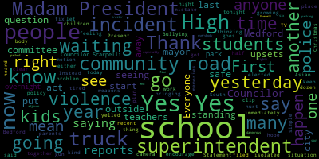
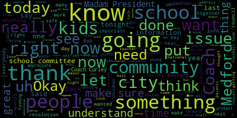
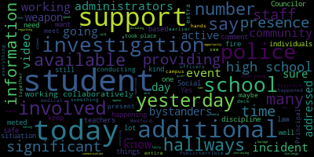

AI-generated transcript of Medford City Council Meeting 12-20-22
English | español | português | 中国人 | kreyol ayisyen | tiếng việt | ខ្មែរ | русский | عربي | 한국인
Back to all transcripts
[Morell]: and 2022 is called to order. Mr. Clerk, please call the roll. Unmute yourself.
[Hurtubise]: Vice President Bears?
[Bears]: Present
[Hurtubise]: Councilor Caraviello?
[Caraviello]: Present.
[Hurtubise]: Councilor Collins?
[Collins]: Present.
[Hurtubise]: Councilor Knight?
[Knight]: Present.
[Hurtubise]: Councilor Scarpelli?
[Scarpelli]: Present.
[Hurtubise]: Councilor Tseng? I saw that you just arrived. It's on the Zoom. I just, I haven't, I just haven't voiced yet. President Morell
[Morell]: Present. So we're going with seven present. You see Councilor Tseng? Seven present. Zero absent. The meeting is called to order. Can you mute your computer? There you go. Please rise to salute the flag. Announcements, accolades, remembrances, reports and records 22-587 offered by Councilor Scarpelli. Be it so resolved that the... Just, okay, good... Yeah, I think... Okay, thank you. Being so resolved that the Medford City Council invite the Medford High School head football coach and the players to the next city council meeting in recognition of their outstanding community outreach. Councilor Scarpelli. You wanna come up? Sure.
[Scarpelli]: Thank you, Madam President. It's my privilege tonight. I know we've had a tough week here in Medford, and this is fitting and needed to address a group of young people that have done our city proud. And before I recognize anyone, if Coach Curley and Coach Offit come on up. I just called them up just because next to coach curly, I looked like a supermodel. So, um, I wanted, I wanted to make sure he was next to me, but you guys, uh, I wanted to really put a resolution through a few weeks back to acknowledge, um, what the method Mustang football team has done and their coaching staff, something that's always, always overlooked. is the impact that young people play in our community. And it's easy when it's something bad, right? When it's something bad, everybody wants to talk about what the kids are doing wrong. But I wanted to make sure that as I look through different messages that I received, I was noticing a trend. I was noticing an amazing trend. that our football team is a special, special group of people. I coached at Medford High School for many years. I was lucky to be part of a great organization and a great team. And one thing I realized, it's very important to have Mustang pride. And I think that's what we're lacking right now in the city, true Mustang pride. And when coach Curley came, came to the program and before that, We had some difficulties. Numbers were low. Kids were getting in trouble. You know, we weren't winning games. Everybody thought that the world was ending. And then you saw the bigger picture. Coach Curly came in. You saw him active in the community. You saw him doing special things with his, his team. And all of a sudden the football team started becoming, became elevated. And now the numbers have grown and positive things are in front of us. It's all right. That's my favorite song, by the way. It's okay. So now, what I wanted to address is something very important. What is a Mustang? It's not a word. I know people, it's easy to say Mustang pride. What it means to be a Mustang is truly to love the city you live in, to represent your community with pride and distinction. And what you boys and girls have done have been amazing. One thing I will say is that we have Coach Curley as your leader. And that's the key, having a leader you can lean on. A person that wants to be involved in a young person's life, no matter what the circumstance. And it's easy to say when things aren't going well and teams aren't winning and you're losing, it's easy to say, well, they're no good, let's get rid of the coach and let's start all over again. What I find so impressive and I want you to understand, this isn't about winning and losing. You went to Fenway Park and you represented Medford with a lot of respect and pride. Why I put this resolution through is for what you're doing off the field. A few things that this football team has done. You've helped organize the national night out with the whole football team and the police department. Really showing what unity means and how everybody works together. You led that. In September, you helped empty out the senior citizens' basements and helped seniors. In October, you helped with the Unified Basketball League. The day before Thanksgiving, Before Thanksgiving game, we saw you guys over at McDonald Stadium helping with the unified flag football game. Then you saw a bunch of football players in yards raking out people's yards that couldn't do it themselves. And now you're helping with the Medford Family Network for their toy drive. That's amazing. And I wanted to have this opportunity tonight to bring Coach Curley up and really commend you for what you have done and really put you on the pedestal that you deserve to be put on. One thing is having the leader to show you the way. And it's an honor that I talk about John Curley tonight because John's a very special person. What I love to hear is I got a phone call from a teacher And they said, George, I saw this resolution. I need to share something with you. I had a problem with the football player. He was being a little wise. And I called Coach Curley. And the next day, Coach Curley was sitting in the back of the room, just his presence there. And what we realized is that young man wasn't offended. He was so taken back that Coach Curley was there to do what? To show him he cares. to make sure that he's doing the right thing. And that's the type of leadership we need in our school system. And what you boys have done and girls have done and gone out to the community and put together all of these community service hours, it's something we should as a city applaud. So I wanna publicly thank you guys. I know we put together a, do we have that at? Okay, so we have accommodations that we put together. It's the Muffet Mustang City Council. The Muffet City Council award the this combination to and we'll say the young man's name, a young lady's name in with the Medford High School football team and your commitment to community service. Congratulations on your accomplishments. Go Mustangs. If we can, we'd love just to recognize you. We're going to call your name up. I know that Coach Curley, Coach Offit are going to help out. If we can, just before we get going, if Coach Curley has anything to say, I know that before we get going, I know we want to, I know some of the boys and girls want to get in and out. So I know that, Coach, if you have anything to say, that'd be great.
[Curley]: I just want to say thank you for allowing us to show what community really is all about. These kids are not told to do this stuff. They actually want to do it. It's awesome. Just like the leaf cleanup we did, I would go to one house and all of a sudden I would see six kids cleaning. Then I'd go another house and all of a sudden I'd see like four kids cleaning. There's 10 kids at the house, but the other six are on the other side of the house just grouping each other together. The beautiful thing about our football team and our program is that we have parents involved. Like you have parents right there here tonight, um, that are really, really involved by like cooking meals, helping us before games, after games, taking care of stuff that we don't know about other kids that we don't know about. So it's a real big, uh, family aspect and that's, um, I'm very honored. And, um, this is very, um, it's a really good moment for the community, not just the football team, but the community itself. And, um, I really do appreciate this a lot. Thank you very much.
[Scarpelli]: I don't want to figure one person. I know that Mr. Mr. Medford's here. Uh, Mr. Chris Murphy, thank you for everything you do with the football association. Um, and we really appreciate it. You look fabulous by the way. So thank you. All right, coach. You ready? All right.
[Offit]: Zaheem Ali. Sam Alvarez. Louise Barbosa.
[Scarpelli]: Yeah, come on up if you're called. Sorry about that. So come on all the way around.
[Offit]: Matterson Bazile. Cole Berretton Green. Nathan Brown. Angelo Cerullo. Brianna Cerullo. Aiden Cesar. Armando Chavez. Emmett Chastain. Nathan Chevalier. Nicholas Corenti. Samuel D. Anthony DeFranzo. Chris DeFranzo. Osmond Elkarum. Stevens Exeter. Prince. Angel Fernandez. Demi Georges. Geo Ross. Jeremy Martin. Levin's Jean. Christian Jordan. Nicholas Martins. Jameson Laguerre. Clarence Jean Baptiste. Jake McGovern. Melvin Mondesir. Sammy Nazari. Devin Santos. Josh Santos. Nick Silva. Matt Starianos. Darius Weeks. William White. And Zachary Marsh. Jacqueline Bartle. And JT Mastracora. Yeah, Ryan Mabardi. Dom Rizzo. Trav Moody. William Pat Erickson. and Lorkins. And Michael Piccolo.
[Scarpelli]: So, uh, coach, I know that we have a bunch of coaches that have been committed. I know that, uh, they've been great with the program. If you could just acknowledge them, I know Coach Offit is your right hand man, but anyone else that, um, need to address.
[Curley]: Yeah, Coach, uh, Buderos, thank you. Coach AJ, and, um, coach Joe Ro is not here right now, but, uh, he's on his way, hopefully coming up a little bit.
[Scarpelli]: So, you know, when you're a true Medford program, when coach Joe's, uh, leading you boys. So I think that I appreciate coach for being, being here. I know he's at, he's at an appointment, but he's going to try to make it. If not, I'll come by the house myself and drop off his. So, uh, what, what, what we did is we put together a certificate that's going to be, uh, in a folder. We're going to be really, we're going to be getting that out to you tomorrow. Okay. But I thank you guys for coming out tonight. I know that, uh, One more.
[Curley]: One more coach. My guy, Coach Calvin. Coach Calvin.
[Scarpelli]: Thank you, Coach. Again, it's easy to point things out when a young person does something wrong. It seems like that's an easy thing to do. What I'm proud of tonight is that we're really putting you on a pedestal because you deserve it. The opportunity, the time that you give on your own, like Coach said, when we talked and said that no one forces you to do anything, but you go out and do it because you love the city of Method. This is what true community is all about. So I'm proud of you. I thank you. My fellow Councilors, thank you and have a great night. We really appreciate it. Thank you.
[Bears]: Madam President, motion.
[Morell]: So on the motion of Councilor Scarpelli, I move approval on the paper that was just forced 22-587. Mr. Clerk seconded by Vice President Bears. Mr. Clerk, please call the roll.
[Bears]: Yes.
[Caraviello]: Yes.
[Collins]: Yes.
[Knight]: Yes.
[Scarpelli]: Yes.
[Tseng]: Yes.
[Morell]: I can't hear you. Okay. Yes. Yes, 7 in the affirmative, 0 in the negative, then I get the motion passes.
[Bears]: Madam President, motion to suspend the rules to take papers 22-584, 22-609, 22-603, and 22-604.
[Morell]: 584, 609, sorry.
[Bears]: 603, 604.
[Morell]: 603, 604, and 609, correct?
[Bears]: And 584.
[Morell]: And 584, okay. Yes. Anytime you want to do that, you can always say the number slower. So on the motion of Vice President Bears to suspend the rules to take papers 22-584, 22-603, 22-604, and 22-609 out of order. Seconded by Councilor Caraviello. Mr. Clerk, please call the roll.
[Hurtubise]: Vice President Bears.
[Bears]: Yes.
[Hurtubise]: Councilor Caraviello.
[Caraviello]: Yes.
[Hurtubise]: Councilor Collins.
[Collins]: Yes.
[Hurtubise]: Councilor Knight.
[Knight]: Yes.
[Hurtubise]: Councilor Scarpelli.
[Scarpelli]: Yes.
[Tseng]: Yes.
[Morell]: Yes. Seven in favor, zero in the negative. Motion passes. The rules are suspended. 22-584 petition for grant of location Arcadis on behalf of General Electric, Medford, Mass City Clerk's Office. You are hereby notified that the Medford City Council will hold a public hearing in the Howard F. Alden Memorial Chambers and via Zoom at 7 p.m. on Tuesday, December 20th, 2022. On a petition of Arcadis on behalf of General Electric for a proposed monitoring well location at 4,000 Mystic Valley Parkway and commercial street.
[Bears]: And motion for a brief summary.
[Morell]: On the motion of Vice President Bears to waive the reading for a brief summary from the petitioner seconded by. Second. Councilor Scarpelli, Mr. Clerk, please call the roll.
[Bears]: Yes.
[Caraviello]: Yes.
[Collins]: Yes.
[Knight]: Yes.
[Scarpelli]: Yes.
[Tseng]: Yes.
[Morell]: Yes, seven in the affirmative, zero in the negative. The motion passes. Do we have the petitioner on the call who can give us a brief summary of the petition before us if you want to raise your hand on zoom. Do you know who's here from... Doug weeks? Oh, I see, A Weeks, okay, got it. Name and address for the record, please.
[Weeks]: It's Doug Weeks. Address is 100 Hollister Way, Burnt Hills, New York.
[Morell]: Thank you. Could you give us a brief summary of the petition before us?
[Weeks]: Yeah, so we are requesting permission to install a groundwater monitoring well adjacent to the sidewalk along the east side of Commercial Street. The purpose of the well is to allow the General Electric Company to continue to monitor groundwater conditions, downgrading of their property at 3960 Mystic Valley Parkway. They've been doing investigation and cleanup work there for a number of years. under the Massachusetts contingency plan. And this well is just part of their ongoing obligations under the MCP.
[Morell]: Thank you. Before I open up the public hearing, do we have questions from Councilors?
[Scarpelli]: Madam President, if I can, is the anybody representing the city to answer any questions on this call?
[Morell]: I see a summary from Owen as well.
[Scarpelli]: This is the first time we've received this type of request.
[Morell]: Tell us a little bit about this project from the city point of view.
[Wartella]: From the city point of view, it's basically trying to it's just a monitoring well, it's a small two foot well that's located on city property.
[Scarpelli]: All right, so structurally, it's not unsafe or it's not gonna jeopardize the area around the well. It's not, it's pretty, correct? And you're recommending this, Owen, is this something you recommend?
[Wartella]: Yes.
[Scarpelli]: Okay, thank you.
[Wartella]: I think I took no exceptions is how I phrased it.
[Morell]: Any other questions for the council? Oh, and is this monitoring water quality or water table?
[Wartella]: Water quality, I believe.
[Morell]: Okay.
[Weeks]: It would actually be both.
[Morell]: It's both, okay. Water levels and water quality. Okay.
[Wartella]: Yes.
[Morell]: Any others from the council at this time? As this is a public hearing, I do need to open the public hearing. So if there's anyone who would like to speak in favor of the petition, this public hearing is open and please raise your hand to speak now. Mr. Weeks, I believe that would be you. Are you in favor of this petition? You can say yes. It's just, it's protocol. Thank you. Is there anyone else who would like to speak in favor of this petition? Seeing none, this portion of the hearing is closed. Is there anyone who would like to speak against this petition? Seeing none, this portion of the hearing is closed. Do I have a motion from the council? On the motion of Councilor Knight to approve, seconded by Councilor Caraviello. Mr. Clerk, please call the roll.
[Bears]: Yes.
[Caraviello]: Yes.
[Collins]: Yes.
[Knight]: Yes.
[Scarpelli]: Yes.
[Tseng]: Yes.
[Morell]: Yes. 7 in the affirmative, zero in the negative. Motion passes.
[Bears]: My intention was to 609 next that's the eviction license.
[Morell]: I'll go back to 603. Yeah. Petitions, presentations, and similar papers. 22-609, petition for common victims license by Lynn Rune, 7 Arlington Street, Lynn, Massachusetts, 01902, for four season boba tea at 34 Riverside Avenue, Medford, Mass, 02155. Handing it over to chair of our licensing commission, Councilor Scarpelli.
[Scarpelli]: Thank you, Madam President. Is the petitioner here this evening? Hi, how are you? So I've reviewed the paperwork. Everything seems in order, sirs. This is what type of, if you could just give us just a brief synopsis to share with everybody.
[Rune]: Sure. So it's a bubble tea shop that we are opening. So it's a flavor of bubble tea from Taiwan. It's very popular at the moment, and it's including fruit tea, milk tea, smoothie. and also comes with the flavor boba that you could add inside. Okay. Yeah. That's all right. Great. And what are the hours of operation? What was that again? Hours of operations? What time? Um, what days and times from 12 to nine from Monday through Friday, Monday through Saturday, Sunday from 12 to seven.
[Scarpelli]: Okay. Yeah. Cause I was falling into play. And then, uh, how many employees do you have?
[Rune]: Just me and my wife.
[Scarpelli]: And that's it? Okay. Um, and I hear great things about this, this product and, um, We're excited that you're moving to Medford Square. It's a great location. I know that my daughter loves it. So it's gonna be something we'll see in our family. So again, I see everything in order, Madam President. I would move approval after questions from my fellow councilors, if they have any.
[Morell]: Thank you, Councilor Scarpelli. I see Councilor Tseng.
[Tseng]: I just wanted to wish you the best of luck. My friends and I have always wanted a bubble tea shop in Medford and it's, It's a great honor for us to be able to have one to call our own. So thank you so much. And good luck. Thank you.
[Morell]: Thank you. And I also want to wish you good luck. I just know at my work, I work at university and they say, if you want the students to come anywhere, offer them boba tea. So I hope you have great success. So motion of Councilor Knight to approve, seconded by Councilor Caraviello. Mr. Clerk, please call the roll.
[Bears]: Yes.
[Caraviello]: Yes.
[Collins]: Yes.
[Knight]: Yes.
[Scarpelli]: Yes.
[Tseng]: Yes.
[Morell]: Yes. Seven in the affirmative, zero in the negative, the motion passes.
[Scarpelli]: Congratulations.
[Rune]: Thank you. Thank you.
[Morell]: So going to 22-603. 22-603 offered by Vice President Bears. Be it so resolved by the Medford City Council that the Prevention Outreach Manager present an update on the Municipal Vulnerability Preparedness Project and grant. Yep. Can you make Penny a co-host?
[Funaiole]: Thank you everybody for having me here tonight.
[Morell]: We have your name and... We know your name and address, but if you could just introduce yourself too.
[Funaiole]: Penelope Fanioli, Prevention Outreach Manager for the City of Bedford. I live in Kingsborough, Mass. Thank you so much for having me here tonight. So I'm here to speak specifically about a program that we have, it's a grant that we've applied for. And I wanna first just get everybody grounded in what is the Office of Prevention and Outreach. The Office of Prevention and Outreach was established in 2015. Thank you to the city council for moving that forward to address the opioid crisis. At that time, they funded my position. In 2017, the city council and the mayor has funded a city recovery coach. position as well. In 2018, we established our Medford hub meeting. It's a crisis specific group meeting with multiple service providers to help people at the highest risk get out of risk. So I want to just point that out, but these are some of the things that we've had going on. In 2020, though, we were reassigned to work on the COVID-19 response. And with that, learned a lot of different things about our community. But I do want to say that prior to that, in the fall of 2019, we did apply for our first municipal vulnerability preparedness grant. And I'm going to go in detail about all the work around this particular grant. But I just want to point out that as I go through my presentation, there's a lot of things that we are doing that are feeding in to this project. So I want to kind of highlight them a little bit here. So we developed and operated the RUOK program. We use that program as a part of fact-finding for our 2020 Municipal Vulnerability Preparedness Grant. We had to move to a social service navigation model. because we were really just coming up with a lot of people who needed support. So our recovery coach at the time was also a master's in social work. She took on the responsibility of doing a lot of that work throughout the pandemic and since has, we've built that position into the department. We also started the multilingual resource line and that has been a huge source of support for how we are, able to communicate with the community. We had it for both the largest flows that we were having come into the office, but also really to be a place where folks with language that is not English as their first language can come to this line and can leave a message to us, for us, with us in their own language. And that's really a critical step in supporting our community members to trust that we're here to support them is figuring out a way to let them be the lead of what they need and us to follow suit. So we have, anyone can leave a message in any language, number one, but we have specifically Arabic, Spanish, Haitian, Creole, and then Portuguese, Brazilian, Portuguese specifically. In addition to that, we started Medford Connects. Medford Connects was started in May 2020 in response to the fact that many of us were kind of stuck in our own spaces and not communicating with other departments or other agencies. And so we started to come together and really start to think about what about youth mental health? What about health equity? How are we communicating? What are you hearing in the community? And this Medford Connects group really transformed. We met weekly throughout the pandemic to really support each other. And we learned a lot throughout that process. And then we started to infuse the MVP project into it. So just laying down the foundation. The other thing I wanna make sure that I've said out loud is that we were funded through ARPA for a health equity coordinator who manages five community liaisons, one representing the English speaking BIPOC community, Arabic speaking community, Spanish speaking community, the Haitian community, and the Brazilian community. So we have, those are all here working every week, and they're helping us to translate materials. They're helping us to communicate with our committee members, manage this multilingual resource line, and they will begin in 2023 doing active outreach to support community members on things such as mass health applications and other applications in order to get support if they need it, in addition to just continuing to build community within these communities that haven't traditionally shown up at city hall to have their voices heard. So, and again, we have a social worker as well, which is Alicia Levin. So in 2017, we started to really think about like, okay, so we've done a lot of this opioid crisis response. We started to set up systems. We are operating those systems still today, but we also started to think a little bit bigger and broader about what we're doing in our work around prevention and outreach. And the social determinants of health is a really critical thing that we need to be working towards to address. So you see these health outcomes. These are all things that we know that we need to address. We wanna prevent, right? But what are the behaviors that lead to these health outcomes? We are also working on that, but what are we doing at this more deeper level around the social determinants of health, built environment, education, violence and trauma, employment, housing, social environment. These are some key places where we should start doing our efforts, but even more importantly, let's take a step back and let's dig a little bit deeper down to the roots these health outcomes, and those are classism, poverty, racism, right, xenophobia, ageism, so on and so forth. So we're looking at this in a comprehensive way, everything that we're doing. And in 2020, when Alicia Hunt, our, at that time, Director of Sustainability, said, I think that this project would really fit well with the health department. We said, let's think about this. How can we understand it? And so really it was an assessment. find out and brainstorm what are the community's needs? What are their resiliency needs? So what is community? I'm sorry, what is climate vulnerability and climate resilience? These are lingo terms from the environmental sustainability industry. They don't make a lot of sense to me sometimes. They probably don't make a lot of sense to the general public. So let's break it down, right? And I am gonna read this because this is not my real house, so I'm gonna do that for myself. So climate vulnerability and resilience are measured by indicators related to exposure, sensitivity, climate hazards, coupled with the ability to get out of harm's way, to adjust to changes and rebuild after a climate event. We just actually experienced a major emergency event, right? And where were we when we started the pandemic? And then where did we end up after? How did we recover? All these things are very, they kind of apply that you can lay an overlay on it. But the folks that are in this harms way and how fast they can adjust to changes really is indicated by rather than seeing these communities as climate vulnerable, we see communities that have been marginalized to the point of vulnerability, which is why we focus on adaptive capacity, right? So folks that don't feel they can trust the government, they don't feel they can trust, you know, what we're saying. We need to figure out how to repair this and to work hard at it. That's what we're trying to do. So as you can see though, in these sensitivity, exposure, adaptive capacity, all of these things really are within the wheelhouse. This is really what I just explained that we've been working towards. We did learn our adaptive capacity needs in that 2020 period. So we got a grant, the big pie in the sky. We didn't know there was gonna be a pandemic and we were gonna do all these things to really start reaching out and understanding what the needs are. And actually we were able to do that in the midst of the pandemic. You know, I'm really thankful for the woman who was coordinating this grant throughout the pandemic, because while we were all down in the trenches, she was moving this department forward. So Andrea is our, she's a wonderful, wonderful partner that we've been working with. We interviewed everyone that got an R U OK call, they got asked a series of questions about adaptive capacity. We built our database of knowledge there with that and with our elder population, our senior population, but we also did multiple rounds of listening sessions in multiple languages in 2020. With that came our hub report, which you can find on the city's website. That's what has established where we're going. So then we decided, well, we know what we know now, and we know that we need to do better outreach and engagement. We also know that we need to work on health equity. We need to work on racial equity. We need to understand bias, right? There's also a lot going on at this time in Med. So we decided to reapply for this grant and put it into three different buckets, community engagement through a team of five liaisons, provider partnership engagement through Medford Connects, and then interdepartmental engagement where we did over the last two years bring in trainings and presentations to staff. We talked about the nine dimensions of poverty. We brought in an excellent presenter this last June and into the summer who really talked about bias and racial bias. So we've done a lot of this work as we've been going through our process. And really the concept here is to build a resiliency hub. So what is a resiliency hub? The climate industry, right? They believe that there's this idea that if we can have a building that's sustainable all by itself, not on the grid, that if there is an emergency, that in fact, we can go there as a community and address our needs in an emergency. That said, we need to support our communities before there's an emergency. So they know to go to this resiliency hub. They can trust and they can predict that this is a viable place for them. So we want to do this, we want to support communities before, during, and then after our climate emergency. So Medford Connects will expand and strengthen our community support. And I've lost my picture. To withstand, to support our marginalized groups, to withstand the climate change recover from these climate crises. In other words, we hope that Medford's adaptive capacity climate change by supporting our community groups will help us in these as we continue. We know that climate change is coming, right? It is happening now and the effects of climate change will put us in a position to have to respond and be prepared to respond. So that's where we are in understanding what we're doing. So, as I said, We piloted our community liaison model. We started reaching out to our communities. We started thinking to ourselves, okay, so where is this mythical building in the city of Method that we can make it energy efficient and independent? And the reality is, is we don't have that building. And if we have it, it's not available right now. So we still need to do this work, right? We got down to it and we thought, well, how can we do this differently? So in our outreach to our other communities, so we were able to form an Arabic task force, we were able to form a Haitian task force, and we are currently and still reaching out to the other communities to continue to build that partnership and that understanding. But we did a lot of needs assessment to understand what would it need to have? What was this resiliency need to have? So instead we created a network. We came up with the concept of the Resiliency Hub Network. This is an operations plan. It's in your folder. This is all working with our climate partners and consultants about what is needed in Resiliency Hub. What does the research say? What does the industry say? In addition to what does the community need and what do they say? So we want to create spaces where Metro residents can build face-to-face connections, celebrate together, support each other, and access resources and services as they need them. So ideally, this location would be a place that you go and maybe you play cards, but you could also maybe pick up some food, right? You could also get the information to get navigated to a social service navigation like our Alicia, our social worker. So where we are now, we did get that next round of funding. And what we also found out was really exciting is that the state thinks our model is so important that they are now requiring this model in their future proposals from other communities. So that's very cool. I'm very proud of that. So what are we doing? We are going to work with our Medford Connects group, folks that have been attending this group regularly and thinking it through, like how do we work better together? How do we work smoother together? Medford is a social service desert. We don't have our providers living within the city. We have Wayside and their wonderful YMCA moved in to support us. They have a youth center and they have Mystic Community Market. And West Metro Community Center, that's really it, right? Metro Family Network is also an agency, but they are also under the city's school system. So it's a quasi-nonprofit as well. But these are our key supporters. So we all collaborated together with a couple of departments as well to start thinking about how are we going to communicate better and how are we going to do this work? So with this change in focus and this understanding that we don't have a physical location, we are moving to a virtual resiliency hub model, right? We're gonna centralize and localize services and information. We're gonna formalize a network of community providers, and we're going to set the foundation for resilient communication. So, As you can see here, these are all programs that there are programs that live within the city right but how are they all connected. So there's a couple different things that we will do, but one of the key things we're going to be able to do with this funding is purchase a software called unite and unite us. is a system, it's a software program, right? With a lot of extra support from that company to help us build up a network. But effectively, our social worker can go in and say, this person needs housing, they need food, they need this. They can refer from that system all at once to three or four different agencies, all of course partnered into the system, right? It can't just, somebody has to receive it. So we have to have that formal partnership. continue to work towards that and build that. And we hope that that will help streamline our communications and just knowing that we have a hub for crisis, but not for prevention. And these efforts will help us to prevent evictions, they'll help us to prevent, you know, starvation or not being connected to services or waiting too long to get what we need. The project is going to do a number of different things. One of the key things that we're going to do though, is make sure that all of our partners within the hub, I mean, within the Medford Connects are going to be working on language access. They're going to look at translation of key materials that they regularly put out. And then we will also be working with them to get more frequent communications as we, more frequent communications out that are smaller, you know, flyers, different blurbs that they want to put out social media, stuff like that. So some of the key things that we are also going to do are English for speakers of other languages. So ESOL, the library and Medford family network are going to partner together and they will have a staff member who will help to build up our ESOL courses in the city and coordinate with other agencies in the area that are doing them. We're gonna work with our council on aging to help them reach more diverse population and think through the communications that need to happen there. We're working with the YMCA in partnership with the rec department to do youth work around social emotional skills to withstand future crises, right? And thinking about how that can apply throughout the community as well. We're gonna be continuing to infuse more support into the Medford Family Network. I'm sorry. to continue to enhance the work that she's doing. Everyone knows Marie is the Medford, she is our heart soul. So the Medford Family Network, right? We're gonna be working on that with them. And then we are working with the West Medford Community Center to look at elevating by our black, indigenous and residents of color and locations of local positions of leadership and economic security. So they have a really great evidence-based model that they'll be utilizing called CIRCLES that takes mentorship from a professional that's doing, you know, really enjoys their career and wants to mentor others. And then they'll mentor folks and they're going to match people up in that regard. And then we are working very intensely with our Mystic Community Market. So Mystic Community Market will be, working on a food justice council to look at how we can shape local foodscapes and systems that are shaped by people who have experienced them and not people who haven't. So we'll be working with them on that as well as another of other communications ensuring that all of their materials are translated so on and so forth. So this is our network here. We have, as I said, I kind of went through it, but this is the visual of it. And as you can see, all of the partners that I cited, we are also partnered with the Office of Planning, Development and Sustainability. They are our guru on environment and climate change. So we need their support overall, but they also, it's a great place for them to hear from our community, what's going on, hear from these partners and how they can build that into strategic planning for our community going forward. And then we have the communications department here at City Hall, who will be really looking at how they're going to be the center of disseminating how we get information out in multiple languages. They're going to sort of be the point person and we're going to make sure that everything's driving throughout the network and in concert with the city. And then finally, Diversity, Equity, Inclusion Director Frances Noget is going to help us make sure that we are doing this to the fullest and the most equitable way, and we are most inclusive. In addition, she has funding to provide more trainings for the community, for our partners, for the city employees. So the final piece of this project is that, and this is why I told you we have Medford community liaisons, we are also hiring more teams of community We're calling them Medford Connectors because we don't want to confuse anyone. We have community liaisons that are attached to the health department doing health department work, and we have our community liaisons attached to this project. We're calling them Medford Connectors. They will support everyone in this network on language access, interpretation, and as well as, you know, just thinking through projects before we implement projects. And that's it. That's all I have to really tell you. This is a part of the process. It's letting you know what we're doing. We are working on our contracts. We will be hiring up these Medford connectors and all of these support staff for our grant, but we are at the start of a new process.
[Morell]: So that's it. Thank you so much. I know Councilor Scarpelli wants to speak. I just sent him... on an errand for Vice President Bears.
[Bears]: Thank you, Madam President. Thank you, Penny, for reaching out to me to make this presentation. I think it's really important for us to hear and for anyone who's, you know, in the community to hear the great work that we're doing. I think this is really showing how we're bringing together so much of the response work and whether we're talking about climate or you know, substance use disorder or food insecurity or housing insecurity, all the other issues that we know so many people in our community are facing. But also just bringing the community together in general and building a more resilient community. I mean, I think something that we have been talking about and will continue to be talking about is social emotional support for young people in our community. And also, you know, making sure that seniors have connection to the resources that they need in our community. And I just think that this is really showing that there's an intentional approach and that the staff on the ground are really doing amazing work. not just in bringing in funding so that we can do this, which I know is really tough. And one of the reasons that it hadn't been done before is we have huge budgetary problems. So I'm glad that there's a pool of money that you're able to access for this, but also how we can really embed it throughout all of our public institutions, from our public schools, to our city departments, to our nonprofit organizations going forward. It's really impressive work, really thankful to you and everyone who's been working on it and obviously continue to love to support and help out where I can. Thank you.
[Morell]: Thank you.
[Scarpelli]: Thank you, Madam President. Thank you, Penny, for all your hard work. You've done so much for our community and I really appreciate everything you do. So I think that Um, one thing I realized as I'm reading through this, this is, it's amazing. This is, this is what we've let we've lacked here for a long time. So I appreciate your effort, but, uh, a most vulnerable community right now. Have we, I didn't see anything with the housing. Are we partnering anything with the, with the method housing department to reach, uh, those families that I think that, if you can.
[Funaiole]: Yeah, we are partnering with them through our health equity coordinator and the work that we're doing with our social work. We definitely are in communication and working with them. This is just, it was just a formal partnership for the grant, is what I'm expressing here.
[Scarpelli]: Okay, so obviously there'll be a big piece of this. Yeah, definitely.
[Tseng]: All right, thank you so much.
[Morell]: Thank you.
[Tseng]: First of all, I just wanted to thank you and your department for all of this work that you're doing. I think something that a few of us, many of us on this side of the rail have been talking about, a lot of community leaders have been talking about is the importance of bringing government to the people and not just expecting people to show up. We all know that there are real equity access barriers when it comes to meetings, even meetings like this, any city meeting, any coming to city events, and your department's, I think, philosophical approach to outreach, I think is something that we should be proud that we're doing as a city. I know it can be really tough to do that outreach, and so I was wondering what some of the challenges that you've found were. Maybe, I know the community liaisons have been doing a great job, But I'm wondering what are some of the barriers that you guys have faced and what are some of the ways that you're gonna address that with the Medford Connectors program in terms of outreach and getting to more people?
[Funaiole]: So that's a great question. I mean, the major issue that we have is the same issue that every city in town is having right now. And that is that there is no housing. There's no emergency shelter. Someone comes here and says, I don't have anywhere to go tonight. I don't have anywhere to send them. The shelters are full, they're full early. That is our biggest worry. That's what we walk home at night like, we feel awful, right? Because we don't have good answers when that happens. And the reality is, is we have to just be very honest with people in that regard. One of the things that we did do that I think what really needs to happen is that we really do need to explain what can you access here in the city of Method. So I was remiss to say that our library has incredible services. They have tools that community members can use, right? They are definitely a resiliency hub in so many regards, right? So driving people to these locations that can be a part of your everyday life in this community is really, really important. And also to think about this grant is very much about that, getting people to be in and a part of, and for us to go out to and truly create this to be like a home. for everyone that lives here, that this is their home, regardless of the way our society is, where a lot of people live online, right? And they talk online and they commune online and stuff like that. So, you know, one of the key things we want to continue to do is describe city services, right? Like what kind of violations do people get? Parking violations, trash maybe violations, right? Like these things that are costly. to community members, we need to communicate better what those are and what the rules are and have access to that. So it's not like, you know, my aunt works at City Hall and I know that I could do this. We need to just make those things a little bit more ready for everybody in the community. And when the website, when the new website is up, we do have recorded videos, audio videos in other languages about most of the city services, sort of like an FAQ for each department. We have that like ready and prepared from the previous round of funding. We just need to get it up live and out. I don't know that I really answered your question, but I think the issue is, is that us becoming more connected and communicative is really, really important. There is another, but what we are currently faced with is so overwhelming. It's much like that opioid, the opioid crisis is like, where do we even begin? But, and really there's things the state has to do to make those changes to support our community members.
[Tseng]: You guys have been doing incredible work. Um, I really appreciate that answer. Um, and, and what you were talking about. And I think, um, I think the work you guys are doing, I think, um, lays out a foundation for what other departments in the city can, um, can do, including the city council, maybe in the further future, maybe I think you guys are testing the waters, seeing what works and perhaps in the future, um, our city council and other branches of government, uh, other departments of the government can look towards you guys and see, what we can do to be more inclusive to get more of those voices that haven't been included in city government to help us come to our meetings and help us, you know, give us feedback and shape our agendas. So that's helpful. I think my question was slightly, slightly more about how are we reaching the residents that we haven't reached yet. which I know can be a really difficult question to answer. And I'm sure you guys are already working on it. I was wondering if you guys partner with other city departments to, you know, keep track of who comes in for city services already, or in terms of maybe a city, the work that we do collecting survey data with our city, city census type things, seeing who moves into the city, pays our taxes, perhaps there's a way to, even in, I know this can be costly, but putting even a short flyer in our water bills or something like that to try to get more people aware that your department exists, that the work that you guys are doing exists. And maybe that will reach more people, but you are the expert here, so.
[Funaiole]: Yeah, I think that you're totally right. One of the things that we're looking at is like, okay, so we need to continue to build relationships with all of our faith communities. That's one key thing. The other piece that we are working on actively right now is going through our entire database of businesses and working in that angle as well. So, you know, I think that I'll have a better answer and a more concrete answer for you in about six months. when we get all of our staff in place and people are moving and operating. But I wanna say though, one of the key things that has been a benefit since the RUOK or our social service navigation began is that we have 89 referrals from city employees to the social worker to get somebody help. So we're definitely getting the word out across the city departments that we can help. individuals that, you know, the other thing to note is that if I show up and I say I have a housing issue, I have other things that I need to be processed through. So that's why we really want our city social worker to kind of work with that person and ask those really, like, really hard questions for someone to reflect on. And so we really do want city department, we want our folks that work here to get the person to the right place in order to get the information that they need that actually will be able to be viable, right? Just giving someone a pamphlet doesn't solve their issue. We're not gonna solve their issue either, but we can at least give them the correct information and the correct numbers.
[Tseng]: That's excellent. And I think to what you've been saying, as a son of immigrant parents, I've had to translate a lot of things, find out a lot of things about city services. It would be super helpful. The things that you're describing will be super helpful. So, and I think lay out groundwork for, you know, the work that we want to do on youth mental health, on, you know, making our community safer as well. So thank you so much.
[Morell]: Thank you. Councilor Caraviello.
[Caraviello]: Thank you, Madam President. I don't know if Councilor Tang just asked my question, but I don't see the Asian population represented here. And they're the largest growing segment of our community right now.
[Funaiole]: And I don't know- So our plan is for this particular grant round is to expand one of our roles that we have a BIPOC connector role. And we wanna really relegate that and reach out to the Asian community.
[Caraviello]: I was with some people in Somerville and they just put on an Asian liaison in their community. So I hope that we can do that there. I do too.
[Morell]: Thank you so much for pointing that out. Thank you. Councilor Collins.
[Collins]: Thank you so much, Penny, for being here tonight and for presenting, you know, some of the process and progress that's gone into the work that this grant has enabled. I think, you know, over the past year, this grant, I mean, I know it's gone on for more than the past year, but, you know, what's come out of this has been one of the things that I, you know, feel most proud of in the city. It's really great to be able to see some first steps towards language equity, doing a better job of reaching out to the people who, you know, historically do not show up to City Hall, are not reached out to, don't speak the language, you know, in whatever way, I think this is really important work. And it's great to get sort of these concrete facts about what specifically has been done, what the grant has enabled the city to do. I think that it's important for us to get a picture of what doing that work of bringing more of the community into community spaces, how that breaks down into roles and positions and programs, kind of gives those numbers some context. You know, as a, as a Councilor, and I know that you in your office, you, you, you get this, you know, 10 times more than, than we do, but, you know, we hear from people looking for housing, we hear from people who are looking for pro bono legal representation, you know, the eviction crisis in Medford square several months ago, eviction help, you know, tenant organizing. I'm been very involved with the mutual aid network for several years. You know, I, what strikes me every time these conversations come up is, It seems like over and over again, we hit against the fact that even our provider network are very close to hitting their bandwidth. And I know that it's in my mind so strongly all the time that our regional network of providers is inundated. There's so much need, you said for housing, food insecurity, there's so much need. And I know that that's one of the many things that we need a regional approach for, we need more state assistance for. Where this comes in as I think, Given that it's so important for us to streamline on the local level as much as possible to make sure that everybody in our community who needs those resources can access them in an easy way. I think this program is doing that and that everybody in the community can have equitable access to the resources that are available. And I really hope that that work can continue in parallel with, you know, regionally and with our other providers working to make sure that we have more places to direct people to, you know, I'm sure it's heartbreaking for your staff every time you have to say, I can get you on that wait list. I can get you on that list. I can't wait. I can't get you on that wait list. And I'm sure that's, I'm sure that's really hard. So I just thank you for, thank you for this work. I'm really excited to see how it continues. And like vice president Behr said, so any way this council can support you and continue that work, you know, we're partners with you.
[Morell]: Thank you so much. Thank you, councilor Collins. Penny, I just had one question. So you mentioned part of the work really needing to lean on the communications department at city hall. So understanding that the communications department is essentially, it's one person. So is there any funding in this grant that, you know, funds additional communication support? Because I think that's something we always run into in all aspects of City Hall. And I also, I don't want to detract from any of your work. This is incredible work, the work of you, the liaisons, everyone, like this is so much work. I want to make sure, you know, communication supports that, but understanding how under, you know, it's one person, so.
[Funaiole]: So we have, The city has hired a COVID-19, you know, communications support. So there is two people now. That's great. Okay. Yeah, so that's, that's excellent. And I think that that role really is absolutely applicable to supporting this grant. So we do have that as a fortunate positive. We do have a little bit of money to go along like formal translations. It's not a lot of money to be able to do that. Obviously that's a big budget. So we have to be obviously thoughtful about what we're gonna use that funding for, but we do have the money relegated to help them to do that. And then I think that's all I was supposed to say.
[Morell]: Okay. Thank you. I appreciate it. On the motion of Councilor Caraviello to receive in place on file second by Councilor Knight. Mr. Clerk, please call the roll. Thank you, Penny. Yes, seven in the affirmative, zero in the negative, the motion passes. 22-604 offered by Vice President Bears, be it so resolved by the Metro City Council that the finance director appear at the December 20th, 2022 regular meeting to present the fiscal year 2023 quarter one financial update and warn articles as requested by the council on a multitude of occasions. The mayor and city administration committed that this information would be presented to the city council and the public by a mid-November deadline that has not been met. Okay.
[Bears]: Thank you, Madam President. And I also do recognize that Councilor Knight did submit an amendment to this paper requesting that the documents be presented to the council in advance of a presentation and that the presentation be tabled to the next regularly scheduled meeting. So I don't know what you have tonight for us, Director Dickinson. I'd be happy to hear kind of a short update, but I do agree that in order for us to be fully prepared for a budget presentation and financial update, having the documents in advance would be helpful. So I don't want to speak for council tonight beyond that, but I do understand that. a concern. So, you know, I'll just put that out there.
[Morell]: Thank you, Mr. Bears. Councilor Knight, or would you like to hear from finance?
[Knight]: No, I'd like to know why we still haven't received one copy of one Warren article since January of 2020, 2021 now, 2021. We have not received one copy of one Warren article. You sat here before this body and put a budget presentation on and we made it pretty darn clear that we want this document. This council has passed countless resolutions saying we want this document, yet your office has failed to provide it time and time again. Now, Bob, I know you're new to the city and, you know, at some point you got to say, I'm not blaming you, but now I am blaming you because you sat here before us in June when we asked for this document, we still haven't received it. The council has taken numerous votes. The mayor's office has said, refer it to the finance director in a response to this body. but we still haven't received it. Why?
[Dickinson]: What precisely are you looking for?
[Knight]: I mean, is this a for real story right now?
[Dickinson]: This is a for real story.
[Knight]: I mean, literally. After a year and a half of waiting for this document. I'm sorry. We've been asking for this document for a year and a half and he goes, what are you asking for now? I mean, is this-
[Morell]: I understand the frustration.
[Knight]: No, this isn't even about frustration. It's about a waste of my goddamn time. All right, that's what this is. All right, it's a waste. It's a waste of all of our time to come up here and be pranced around like dog and pony.
[Morell]: Director Dickinson.
[Knight]: To be pranced around like dog and pony.
[Dickinson]: Warren articles are passed by this body.
[Knight]: They're not passed by this body. We've never voted on a Warren article in the last decade.
[Morell]: Director Dickinson, do you have an update for us or anything you can provide?
[Dickinson]: Well, I'd like to clear this up. I want to give this body everything that it wants. I really do. I came here. I have the budget actuals for the first quarter. I have revenue projections that unfortunately are locked up in my computer, which died. But I can email all that stuff to you. I really don't want to sit here and there's no reason for me not to give you stuff that you want. That's what I'm saying. Okay, and we're on the same page. We really are. I'm not really sure physically what it is. Warrant articles are passed by this body. They're not. We've never voted on them once, ever.
[Bears]: They're never presented to us, Bob.
[Dickinson]: What are we looking for?
[Knight]: I want to know how much money KP Law has received in the past year, for example. So I can take a look at the Warren articles and I can say, oh, geez, we have a budget in the law department that says they're going to spend $200,000. But I'm looking here, in the last six months, we've spent $1.7 million at KP Law. Why? And I can get ahead of some of these issues so that come the budget in probably, well, we'll get it, what, maybe June 30th. When we get to June 30th for, you know, July 1st vote, I might be able to have a little bit of understanding as to why we're in the situation we're in.
[Dickinson]: Now I am absolutely clear on what you, when you're talking about the AP warrant, that's what you want to see, which all the bills that get paid every week. All right. How many years do you want that for?
[Knight]: 2020. We're going to start there. You know what I mean? We've been asking for it.
[Bears]: 2020 to the present is what we're requesting.
[Knight]: We've been asking for it for four years, but you know, in three years.
[Dickinson]: Okay. Now I understand exactly what you're looking for.
[Knight]: And I'm sorry to take my frustration out on you, but there's a mayor in this, there's a mayor in this building, right? And we send these papers to her and they just sit there and they don't move. They just sit on the desk. All right, so I show up here and I try to do my job as hard as I can. I try, I really do, but I can't do it if I don't have the tools. I can't build a house with a saw.
[Dickinson]: I understand your frustration and I will work with the mayor to get this documentation to you. Because if there's a holdup, My issue with this whole thing is procedural. I need to know exactly what you need to see when you need to see it. And I'm not completely clear. We're not having a good...
[Knight]: Has the mayor's office ever called you and said, this is what they're looking for?
[Dickinson]: No.
[Knight]: Has the chief of staff ever called you and said, this is what they're looking for? Has the law department ever called you and said, the city council has asked us to draft an ordinance This is what they're looking for.
[Dickinson]: No, the law department's never called me.
[Knight]: So the law department hasn't called you, the chief of staff hasn't called you, and the mayor's office hasn't called you. But this council's taking at least a dozen affirmative votes to get this information. But then tonight, we have a paper before us to create another new job and give somebody else another raise. I mean, come on.
[Morell]: Thank you Councilor Knight. Yeah, and just to just to clarify...
[Knight]: I feel bad that they sent you out here to fall on your sword to be a sacrificial lamb.
[Dickinson]: I'm fine with falling on my sword
[Morell]: because we do we vote on these papers, they're supposed to go to the administration, the administration is supposed to send them to the to the parties that are there. So if you're not getting that,
[Dickinson]: I will make sure that I'm getting them. And I will make sure that you're getting the information that you need.
[Morell]: Yeah, I can also always, you know, I can reach out, I can have the Clerk reach out after the fact, if it's not, if it's not getting there.
[Bears]: Point of information. Thank you, Madam President. If we could, I think it sounds like we should just get on paper right now what we're asking for.
[Dickinson]: That would be great. And you know, part of this is me being new. I'm not coordinating with the mayor's office.
[Morell]: I mean, new or not, if you're not getting the papers, you're not getting the papers. So that's not your fault.
[Dickinson]: I don't wanna be saying that they're somehow remiss.
[Bears]: It's not exclusive to the finance department, Bob. It's almost, unless we make the outreach directly, every paper that we submit to the mayor's office to almost any department, we're not getting the response in a timely manner or a complete manner. So I just wanna put that out there and I'm not gonna ask you to say that, I'll say it. The first thing I wanna just get on, so yes, I think the first thing we'd really like to see would be the AP warrants from January 2020 to present. And I know that's probably a pretty big file, but I think we'd all like to see it electronically and also to be sent to the clerk to be delivered to us.
[Dickinson]: Okay. It would simply be these, these are the vendors who were paid this warrant.
[Bears]: Yeah. And I mean, we can also send you an example of what the previous finance or finance director gave us for...
[Dickinson]: Specific bills would have to be looked up if you wanted to see a specific bill, but it will say, you know, we paid Joe Schmo $600
[Knight]: out of this account.
[Dickinson]: Yeah. Okay.
[Morell]: I can also have the Clerk send you when the records are ready. Control F, find your name, and you can also see this right now.
[Bears]: Right. I mean, the other thing we can send you is Aleesha Nunley Benjamin did provide us with copies of what we call warrant articles and we can provide you an example of that so that you can see what those reports were like. And then the two things that you said that you have with you tonight, you said you had a quarter one
[Dickinson]: Quarter one budget to actual with the votes that you took on the 28th for the general fund and water sewer.
[Bears]: And then the other thing that you said is you have revenue projections.
[Dickinson]: Well, I have first quarter revenue compared to first quarter revenue from fiscal 2022.
[Bears]: Okay.
[Dickinson]: It's stuck in my computer. I can email these files to you if you prefer.
[Bears]: Yeah.
[Dickinson]: I do have paper copies of this along with the budget stuff. along with the vote, the copy of the vote that was taken.
[Morell]: Do you have multiple copies?
[Dickinson]: Oh yeah.
[Morell]: Can you hand them, can you pass them to Larry and he'll get them to us?
[Bears]: Yeah. And I don't mean this to be exhaustive. I'm sure other Councilors are going to have other items, but basically what would be also very helpful is if you could take anything, anything that we request tonight, send them to us in a digital format and the clerk in a digital format, he can provide it to us in a print format. And then if we can have that, you know, maybe by the end of this week, then we could have a full presentation from you in January, as Councilor Knight had requested, where we've had time to review the documents in advance to ask, have our questions ready.
[Dickinson]: Okay.
[Knight]: It might also be helpful to go talk to the city clerk and say, hey, can I see a copy of the council tracking sheet? It says finance director, because there's probably literally 40 requests that we're looking for out of your office over the course of the last year.
[Dickinson]: All right, well, I apologize that I haven't acted on. I will follow up with that.
[Bears]: I'm through, thank you.
[Scarpelli]: Thank you, Madam President. Bob, again, the other person taking the heat, and I apologize for that. It's not fair to you. No, no, and I'm not going to pile on. I think that we should, you know, I think for preparations purposes, I think that maybe calling for a Committee of the Whole meeting with Bob once we have all this information so we can sit down and really sink our teeth into these issues. This is something that, so you understand, Bob, you know, something as simplistic as people that are watching understand. You know, when I was 14, I opened up a checking account. My dad said, okay, this is how you balance your checkbook. This is how you spend your money. And if you don't, if you don't have, if you have $100 in your account and you want to purchase something for $120, it's telling you you can't. Okay, you're responsible. to control your own finance. Unfortunately, what was saying time after time here, we're getting papers from the mayor, we're getting requests from different Councilors about asking for money papers. And to be honest, I haven't voted for a financial paper and approval in a long time, because I, I find it very difficult for this body to do their job, not understanding the basic financial breakdowns of our community. You were there when we had the tough budget process. It was horrifying for you being new. And as we're going through this process, Bob, we haven't gotten one, one paper. We haven't gotten any information about where we're spending our money. And here we are, God, almost January, January one. So I want the public to know this is the hardship we're feeling in the council. We don't have a city solicitor. I'm trying to ask questions about legal matters and we don't have anybody to turn to. And I apologize that you have to be here tonight and really be hung out to dry. I'm curious if the chief of staff is here.
[Morell]: I did see her on the call earlier. She is on the call.
[Scarpelli]: If I can, can we address the question to her?
[Morell]: Madam Chief of Staff, are you there?
[Scarpelli]: I think it's a simple question. I know that the Chief of Staff has been out for legitimate reasons and she hasn't She just started to ramp back up, but were you familiar that our finance director hasn't received any of this information from this council?
[Nazarian]: I'm not sure I would phrase it that way. However, I would state that both he and I have been discussing the matter, attempting to work on what specifically it is that the council is looking for. I think that this is a matter of language And I've also been working to try to find out what historically the city council has received. But again, as you stated, I'm returning from leave. So this is a matter that's important to myself, the administration, the finance director, I believe we all intend and want to provide this information. So I apologize that it hasn't been provided yet and I take responsibility for that.
[Knight]: I'm just curious if a rank and file employee say in the Medford DPW for a year and a half failed to provide you with information that you requested, what would happen to them?
[Nazarian]: President Morell through you, I take that as a rhetorical question.
[Knight]: I'm not sure I understand what you're saying. even when it's clear.
[Scarpelli]: So again, I heard your answer. I don't appreciate the response. I think that this has been a total lack of disrespect to this council. We have crises that we're dealing with right now that we're looking at financial support and hoping for some financial support. And we don't know where we are financially. Um, so to move forward with any of these dog and pony requests, and then ask for funding for deeply needed, uh, resolves and not having an understanding of where we are financially is very difficult for me as a Councilor to make decisions, moving the city forward. I, I hope everybody that's watching and understands realizes how dysfunctional this community looks right now. There are so many issues that we're seeing that coming across from us. And this is so totally embarrassing. I'm disheartened right now. So Bob, again, I apologize for the answer that the chief of staff just gave. The understanding is this, we have been asking for money papers. the day after we had our budget and we've been trying to get some information, some valuable information of where we're going, what direction we're in. We're trying to figure out what tonight's a very important meeting. There's some resolutions tonight. We're talking about some very important issues and looking to fund some very important issues, but getting the okay from the administration to fund papers and then not understanding where we are, because I believe the mayor, you were there when the mayor said as critical as last year's budget was, next year's is going to be even worse. And what puts me on edge right now, Bob, is the fact that we haven't seen anything and we can't move to support our most neediest members of our community and resolutions that are coming forward. So I find this very disheartening. I find this very troubling and I don't know how my 16, 17 year old daughter has the ability to run her finances better than what we're seeing with this multi-million dollar corporation called Medford. So, and again, I know it's not you Bob, but I had to express my concerns and disgust. So thank you.
[Dickinson]: Councilors, at some point it is going to be me. So I'm just to let you know, we have had staffing issues. Tina's been out, Tyler quit. We've got a very, very good person to take over from Tyler, she is already working on the 2024 budget. We've already had meetings on it with all the department heads. So we're working on that right now. We got the recap done. I'm working on the state reporting. So we'll know what pre-cash will be. Hopefully we'll have that wrapped up within the next month, depending on how much availability they have. They have staffing issues too. We were fortunate to get the recap done so quickly because there are people out there too and everybody does their recap at the same time. So that's coming along. By the end of December, I should, I can do the cash recon for the first half of fiscal 2023, which we can send off to CLA and get our revenue replacement number from ARPA for that. You also have a much better projection of how much, you know, how much revenue we are actually going to take in in 2023. So we are working on all these things. I'm doing a lot of cleanup work, especially on all the grant fundings and the CPC, the linkage funds, all of that stuff. I'm just trying to get the books back in order to be in a firm foundation from what I'm being able to say, this is what's actually going on. So I'm sorry for the miscommunications or lack of communications, but we are seriously working on this stuff. And I don't wanna be here till two in the morning on June 28th hashing out a budget, neither do you guys. So this is all gonna be taken care of. well before that. That is what's going on right now with us.
[Morell]: Thank you, Director Dickinson. Councilor Collins.
[Collins]: I just wanted to thank you for coming before us for having these numbers prepared and for your candor. I think we all know that when you took the job here, you didn't sign up for a cakewalk, but we all know how much is on your plates with catching up from our financial backlog, reconciling everything, and we don't want you know, your, your role in, in, in getting us up to speed to be any more, you know, painful than it has to be. So I'm hoping that, you know, I'm looking forward to the presentation in January. I really appreciate, you know, your help in dialing down how to get us what we need. And I hope that, you know, at that presentation and the committee of the whole, if we refer it there, we can also at that point kind of assess what do we need going forward to make sure that this back and forth between the council and your offices, you know, having communication wise, what it needs, just to make sure that that's as streamlined as possible. So again, thank you for being here. We do really appreciate your hard work.
[Morell]: Thank you, Councilor Collins. Councilor Scarpelli, was that a motion to send this to the whole?
[Scarpelli]: Please, I think until we have all the information in front of us and Bob has time now to get the documentation that we need to move this forward or to understand it, I think we need it immediately. It's something that, you know, we've been asking for forever so thank you.
[Bears]: Just amend the motion to request that the finance director submit to the clerk in the council and digital format, the documents requested and documents that we listed out earlier. And I'll leave it at that but I do think we should try to schedule this early in January and try to figure out.
[Morell]: Yeah, and I can, I can connect with you Bob, just whenever it's ready, I can, we can get that on the schedule. Whenever everything is ready, we can get that on a schedule so I can coordinate with you. I'll work with you whenever, I'll email you, I'll follow up so we can schedule it when you have everything ready. So on the motion of Councilor Scarpelli as amended by Vice President Bears, seconded by Oh, counts and I had submitted advance for which. So on the motion of Councilor Scarpelli as amended by Vice President Bears, seconded by Councilor Collins. Mr. Clerk, please call the roll.
[Hurtubise]: Vice President Bears.
[Bears]: Yes.
[Hurtubise]: Councilor Caraviello.
[Caraviello]: Yes.
[Hurtubise]: Councilor Collins.
[Collins]: Yes.
[Hurtubise]: Councilor Knight.
[Knight]: Yes.
[Hurtubise]: Councilor Scarpelli.
[Scarpelli]: Yes.
[Hurtubise]: Councilor Tseng.
[Tseng]: Yes.
[Hurtubise]: President Morell.
[Morell]: Yes. Seven in the affirmative, zero in the negative, the motion passes. Councilor Scarpelli, you had asked me to take another paper. Paper 22-613. 22-613 offered by Councilor Scarpelli. Be it so resolved that the city council discuss enlisted parents dealing with the safety concerns at Medford High School after the horrific incident that occurred at Medford High School on Monday, December 19th. Be it further resolved that the City Council take immediate action to ensure the safety of our children and teachers. Councilor Scarpelli.
[Scarpelli]: Thank you, Madam President. I appreciate taking this out of order. This has been a very emotional last 24 hours. It's been very intense and I wanted to make sure that if you allow me to give a small presentation that I prepared so I don't miss anything. Medford's in crisis. It's not a new crisis, but one that has started to spiral out of control and has just caught the attention of the outside world. Sadly, we had many years of warning given to us to prevent the latest incident. But as we see today, those warning signs were ignored by the very people that were entrusted to protect our kids by acting on our behalf. Most of you know my background as a former coach, teacher, and now Assistant Director of Recreation for Neighborhood Community. I wanna look at a few fundamentals to see where we missed out, where we made our mistakes. First thing that came to me is, are our kids safe? No, they're not. It's not the data that we need now, we now have the actual proof from our experiences. Are we doing all that we can to keep our kids safe so they can learn and grow successfully? No, the warning signs are there and we ignored it. Are we unified on this issue? Absolutely not. Sadly, some people take their responsibility serious while others do not. I question the personal motives of some to simply protect their income versus protecting people that got them elected or hired. There are outside groups currently bullying elected officials to exercise their views, which do not help to protect our kids. National organizations, national movements, while we're having crisis here in our own backyard. Is our division hurting our kids and the reputation of our city? Yes, that's evident. The division in this great community is tragic. If it continues, we'll just see the first of many situations that will bring our amazing city even further down. Now, two heads are better than one, and four heads are better than two. Unified, we will overcome together, divided we will continue the sad, turbulent ride to a much worse place. You know, last night I was accused of politicizing this issue. My knee-jerk reaction was quickly defended to the categorization of being looked at and politicizing this issue. Then I thought about it. Of course I'm politicizing this issue. because that's the only way, the only mechanism that we, our kids and the citizens have to make any changes to our system. We live in a political system that requires checks and balances to protect our citizens. So being attacked with this term makes no sense and showed me exactly how those that are guilty continue to deflect away from their own inaction, neglect and responsibilities. Well, we've learned that inaction equals action, meaning inaction enabled these outcomes, putting our kids in harm's way and making our parents petrified to send our kids to school. That's the atrocity that we are looking at today, right now. If anyone has been politicizing this issue, it's those that have been both enabling these outcomes and hiding from the consequences of their own inactions. We were elected by the people, for the people. It's time that we get to work for the people, especially our children. See, when we got elected by the people, It should not be measured by winning or losing. It should be measured by the impact that we make and promises that we keep. This is our opportunity that has presented itself to us today. The question was presented, what are we going to do about it? Here's what I propose to get us united, back on track and protect our kids the way that they require from us. First, I'm going to be asking the mayor to put together a team so we can put an implementation of safety that works with our teachers, our principals, our police department, so our kids feel safe when they go back on January 3rd. We want them to feel safe. Meetings, consultants, That's passed. We have true professionals in our building that we can work together over the next two weeks to make sure we have that plan in place. I'm sure of that. I have resolutions in place this evening that would ask the mayor to prepare an RFP to hire and train true security guards, four to five. Make sure that we have full staffing in the video room where our staff can watch a minute-to-minute action and who's going into the bathrooms, who's loitering in the hallways, to make sure our administration can see where these issues are happening and get the support there as soon as possible. Last night, I believe it was Tony Puccio who brought up a very simple resolution. We ask our parents today to do everything, to be involved. And he mentioned that. I thought that was a great idea. When I got home, I got a phone call from a former soccer captain. She went to school in Tulane, worked in Louisiana, and she sent me an article about a program they use in the schools in Louisiana where they were having issues and concerns like we're having today. It's called Dads in the Hall. Maybe to be correct, we'll call it Dads and Moms in the Hall. If we could put parents on a bus to go to a field trip to Plymouth Rock, then we could put parents in the school that want to assist our teachers to make sure they're just an extra eyes and ears as you walk the halls. So I thank you, Mr. Puccio, for bringing that forward. I'm going to ask the school committee to open up their meetings for public participation, where there's a dialogue like last evening. So if there's an issue with parents, students, or constituents, they have this forum to come and speak with a dialogue back and forth to make sure things are identified. The process that's in place right now, as some parents can tell you tonight, very daunting. to put it through, to ask to get approval, to read something, to write something up and making sure that what is going to be presented is approved is another form of censorship. If not, I'm gonna request this council to go back to the original request that Councilor Knight and I put forth as a ordinance change demanding that we put in place that format for the City School Committee so they have an avenue to have a voice and they can listen. So this has been a very intense last 24 hours. My daughter didn't go to school, nor did I believe close to 400 other students. The word back was that the police were there and they were present, but we also know that won't happen every single day for the rest of the year. So I implore our school committee to work together with the police department to move forward to making sure that there's a plan in place over the next few weeks so we have our children feeling safe. And that leaves me with one thing. I know that she's not here right now, But I want, I heard something last night from a very courageous young lady and I want to leave with something that she said that I take it. It was directed to me. It's direct to all of us. It was very simple to, as she said, step up a step down. We have a responsibility and I hope we hear it. We have a responsibility to make sure that we're giving the tools to our leaders in the school, our principals and assistant principals, to make sure that they can run the schools as efficient as they did when they led the middle schools or before this administration, when they were part of the resolutions. So let's unify this community. Let's unify our schools. and let's make Medford the city that it's always been, an amazing place to live, work, and raise their family. So thank you, Madam President.
[Caraviello]: I also had a grandchild that didn't go to school today either because of her fear, but, you know, Instead of being here tonight advocating for funding, hiring teachers, school repairs, or asking for supplies, I'm here tonight to add my voice to the groundswell of anger and outrage that so many are feeling regarding the recent violence at Bedford High School. So now I am demanding adequate resources, security, to help keep our students safe. First off, let's get one thing straight. Stabbing yesterday was not an isolated incident. Bullying has been going on for a long time at that high school. Didn't just start yesterday. A gun clip found in a middle school auditorium during a school vacation was an isolated incident. No one was hurt. Gun clips by themselves don't hurt people, but knives and physical violence do. Everyone who engages in the community could see this coming a mile away. Bullying has been escalated, unchecked, since the start of the school year. But rather than address the situation on early school officials, superintendent, school committee, and the mayor consistently downplayed each and every incident, hoping it would go away. It was unconscionable that no comment, acknowledgement, or plan of action was implemented immediately. What are we thinking? We all know when people aren't thinking. Yesterday's school committee was another pointless charade of the council needs to work together and not yell at us. Let me tell you something. I've been working here for 11 years. I've gotten yelled at many times. If you can't take getting yelled at, then don't run for office. I've been willing to work together with any elected body since the first day I was elected. People are justifiably angry. It's become quite clear that when the teachers had a vote of no confidence, it was directed to the school committee and the mayor's chair. I'm tired of seeing my city, Medford, in the media recently with a glaring negative spotlight now focused on our community. It's evident that we're not ready for this prime time. I was astonished to hear our superintendent say on television last night, we don't encourage bringing weapons to school, encourage. Statement I find boggles, say at least. How about zero tolerance statement for any weapons and violence of any kind, and we'll act swiftly and with determination to eradicate this unacceptable behavior and prosecute anyone who violates this policy to the fullest extent of the law. That's what our superintendent should have said. Here's another mind twister. Biffin High has no expulsion policy or program in place. What measures does it send? Do you want, and don't worry, you won't get kicked out of school. After all, everyone is entitled to an education. No, not if they're a danger to this community. And all this begs the question, where is the mayor in all this? I hope this just goes away, not showing leadership. That's not a surprise to me here either. So where do we go from here? First, keep the police present in our high school indefinitely. 392 students called out today. Students, teachers, and parents demand a safe learning environment. This is a first step, bringing Councilors to talk to our affected students and ensure them that the situation now finally is being addressed. Schedule multiple listening sessions for parents and community members to express their feelings and vent. Give them your absolute promise that this ends now. Go through the school incident logs and put problem students on the notice immediately. Again, it's an insult to say this was an outside incident. The kids at the school have seen a growing power vacuum of non-discipline with the recent bully and failing body to act up themselves. It's copycat pure violence and simple. Lastly, hold yourself accountable and admit that you minimize the problem instead of deflecting the blame. That's the only way to move forward from this. The principal and superintendents should put a clear professional plan in place to start 2023 right. We owe it to our children and their future. We can fix mistakes that were made, but if someone loses their life due to needless violence, that's not a mistake that anyone can fix. I'm proud to be a graduate of Bedford High School, and I have many fond memories of my time there. What kind of memories are these children gonna have for the eight years at Medford High. We can change that, but we've got to act now. Thank you.
[Knight]: First of all, I'd like to thank Councilor Scarpelli and Councilor Caraviello for being outspoken in their efforts to raise awareness as to what's going on in our schools. Neither one of these gentlemen were required to appear for the school committee meeting last night. They did so as concerned parents, grandparents, and public servants here in the city. And when I listen to what they say, and I listen to what people on the street say, and when I listen to what my kids say, and I listen to what my wife has to say about these public schools as an educator at 25 years in a neighboring school district, it doesn't make me feel good. It doesn't make me feel good at all. I feel as though we're failing our students. We're feeling the most vulnerable members of our population, our children. Councilor Scarpelli made a good point. He said, it's the one-year anniversary. I said, one-year anniversary? Are you talking one-year anniversary or what? One-year anniversary. It's December. Christmas hasn't happened yet. I go, one-year anniversary or what? He goes, no, you don't remember the two walkouts that happened last year? The two walkouts at Medford High School that happened last year? because of escalating violence in our public schools, when hundreds of children, hundreds of our students, our kids, our neighbors' children, our families got up out of their seats and they walked out of the school because they said, we can't take it anymore. We've had enough. Here we are exactly one year later. I don't think we're in a better place. I think we're in a worse place. I think we're in a worse place. We're in a place where parents are shut out, don't have the opportunity to speak. We're in a place where our kids are afraid to go to school. And I think we all know what happens when kids become afraid to go to school. We've all seen the documentaries on how gangs are formed. We've all heard the stories about kids that get bullied in school and then decide to bring weapons because they've had enough and shoot up schools. We've all seen this, it's happened in neighboring states. Why do we feel as though we're impervious to the same situation or the same circumstances? Because we're not, we're not. So we're in a place where kids are afraid to go to school. And we're also in a place where we see embarrassing news story after embarrassing news story after embarrassing news story in the headlines with the word mentioned. And that's a shame because the city is better than that. The city is better than that. And our kids deserve better than what they're getting. There's no accountability that shows it shows in this culture that's permeating our school system is transcending into the classroom. And we can all sit here and we can say, this isn't right. And this isn't wrong. but the data doesn't lie. The numbers don't lie. So let's talk about the numbers a little bit. Let's talk about the numbers. 42% proficiency in math, 50% proficiency in reading, 240th in the state college readiness index, 181st in graduation rate, and 184th overall. Our kids deserve better. Our kids deserve better than what they're getting. They don't deserve to go to school afraid. They deserve to go to school with leaders that are willing to step up and accept the challenge. Now, when this incident first happened, I got an email and the email spoke volumes in terms of the culture that's going on with this administration. And I have to take a look at it and just mention it because I think it really speaks volumes. If I can find it and remember how to work this thing. This is a confidential and urgent update relative to the circumstances at Medford High School from Dr. Maurice Edouard-Vincent. MHS is currently in a stay-in-place due to a medical emergency. A student was stabbed in the restroom and transported to MGH. Four students have been identified. The police are here working with us. We're working on an official communication. What's that mean? We're working on an official communication. You shouldn't have to work on facts. You shouldn't have to work on truth. You shouldn't have to work on anything other than telling the people what happened and what you're going to do to prevent it from happening again. Here we are 60 days ago, two short months ago. Two short months ago, a girl was assaulted. terribly assaulted, captured on video, broadcast all across the local news stations. This poor girl has to go to school every day, shaking in her boots. If it weren't for the strength of her parents, if it weren't for the strength of her parents coming up here week after week, day after day, fighting to raise awareness about these issues, it would have gone away. And then 60 days later, we would have been talking about this gentleman that got assaulted and stabbed, and then it would have gone away. And then 60 days later, something else would happen and we'd bring it up again and we'd start talking about it. Let's get serious about it. All right. It's been a year. It's been a year since the students in that school told us they've had enough. It's been a year since they all got up out of their desks and had the courage to walk out. All right. They had more courage than the adults in the building. And now they have to have more courage than the adults in the building to go to school. because they're scared for their safety. This is sickening. This is sickening. And nothing anybody can say when they come up to this podium, all right, is gonna change the way I feel about it. The way it's been handled is horrible. Horrible. These aren't isolated incidents. A year ago, one year ago, the whole school said we've had enough and they walked out. This is not an isolated incident. And the longer we keep approaching this situation as an isolated incident, The more isolated incidents are going to occur. And then when the budget comes around, we're going to hear the school department cry poor mouth. Well, everybody wants to go to Minuteman and everybody wants to go to the charter school. Well, yeah, no kidding. Why wouldn't they? You're going to sign your kid up for karate when they're five years old just to go to Medford High. You can pay one way or you can pay the other. You can pay with peace of mind and financially send them to a school where you feel as though they're going to be safe and you're going to receive what you deserve. Or you can take the risks and send them to Medford High. And that's what parents are going to say to themselves. They're going to say, is it worth it to me to spend this money to not have to put up with stuff like this? And parents are going to say yes, because I'm a parent that's thinking about it. I'm losing faith in the Medford public school system. And I hate to say it. I hate to say it. Because I went to the Hervey School. I went to the Brooks School. I went to the Hopps School. I went to Medford High School. I played sports for Bud Kelly. I learned about what it's like to have blue and white in my veins. I learned about what it's like to be responsible, to want to be someone that gives back to his community. And that's why I chose to seek public office. And when I sit here and I watch some of my colleagues in government hide under their desk, it infuriates me. It's okay to say no sometimes, you know, and it's okay to say yes, but what you have to do is say something. You can't stand for anything if you don't know where you stand and what you stand for. Thank you, Madam President.
[Morell]: Thank you. Councilor Collins.
[Collins]: Thank you, President Morell. You know, mostly right now, I want to, I know there are community members in the room, I want to hear from community members. But I just wanted to say at the outset, you know, yesterday's incident was heartbreaking. It's traumatizing during an already extremely raw and difficult time. These events affect the whole community. As leaders, I think it's our responsibility to hear from people who are the most affected, the students, the families, teachers, and staff. I think we can all agree, nothing is more important than our public schools being safe and stable and supportive everybody who has to be inside of them. I think that's a really shared goal. And I think this heartbreak is shared that our schools are not safe. They're not secure. They don't feel supportive. And, you know, in this conversation, you know, I want to hear from the people most affected. That's the folks who go to the schools every day and the people who love them. As we mentioned, you know, many Councilors, myself included, have papers later on the agenda for ways that this council can act within its power to try and be part of the solution. We'll get into more of that later. It's deeply troubling that we have to be having this conversation. It's hard to put into words how to express sympathy for something so painful that's happened to kids just going to school and their families. It's a sorry thing, the events that precipitated this discussion, but we have to have it and we're gonna have it. Councilor Scarpelli and others were calling for urgent action. We're calling for the council to act within its purview to try and be part of the solution. And I completely agree, completely agree. You know, we have to use our powers as city councilors to try and be part of the solution. We aren't the school committee. We can't be the school committee. We can't make the type of the decisions that the school community is empowered to make. We can use the powers that we have as the city council to try to direct resources where they need to go to try to be a part of the community-wide conversation. to emphasize the voices of the folks that are most affected by this, to listen to the people who know best where those resources need to go. And I'm glad that we get to be a part of that conversation. I hope that going forward, this can be more collaborative, that we can all do our specific roles, but in concert with each other. And lastly, since Councilor Scarpelli's resolution calls for public input, if anybody's here to give input, I just want to acknowledge that not everybody does feel comfortable speaking in public, especially on live TV. It's not for the faint of heart. And also not every comment, especially when kids and school security is involved, is best said in a public setting. I just wanna restate for the record, whether we're in session or not, I'm available to any resident, to any constituent to field ideas, to hear your questions. If you just need a listening ear, if you don't feel comfortable speaking tonight, you can always reach out to me, we're available. So I just wanted to say that at the outset of any community input. Thank you.
[Morell]: Thank you, Councilor Collins. Vice President Bears.
[Bears]: Thank you, Madam President. Nobody's happy. There's disagreements about this. I don't think there's any single person. And if there is, they got to get checked out who was happy about what happened yesterday. I think everyone agrees and agreed six months ago, or two months ago, or two days ago, that there are things that need to be improved, that there are problems that need to be solved, that we're not always, and even if we had solved them, that we're not always going to get it 100% right 100% of the time. Now, how we, address those problems, how we build processes, how we improve systems, how we address systemic challenges is by putting forward solutions. The thing that we're talking about in resolutions coming later than this are some ideas around that. But I think also it's important to look back at what we've heard from our school committee and school administration, what we've heard from this council, when it comes to the budget and the funding of our schools, when it comes to the resources that we need, when it comes to the resources that we need in this moment, when we know, hey, there was violence at Medford High School when I was there. There was violence at Medford High School 30 years ago. And we can talk about certain numbers. The one number that hasn't been talked about any of this is actually looking at the trends and data on this issue. But the one thing we do know is whether it's Medford or a neighboring community or every community in Massachusetts or every community in this country is that student supports are deeply needed. That mental health is a serious issue. That conflict resolution and addressing problems in a peaceful manner is a huge problem. And that quite frankly, before these things got worse, it was a problem. It's an even worse problem now. Students are walking out because they recognize it. Students are crying out because they know that they need help or they know someone who needs help. It's a question of resources. The first thing I thought about when I ran for office was the funding for our schools three years ago, that was before the pandemic. It was my first concern in June when we were talking about the fiscal 23 budget and the $2.8 million that got cut from our schools at the last minute. And two weeks ago, it was again, where I was focusing my energy and efforts in a resolution that passed this council about funding and asking what are the supports? What are the funding that's needed? Another thing that needs resources and funding. We were just talking about it for municipal vulnerability plan. We were just talking about it. When we talk about this whole city, schools and city side, communications and engagement, the city doesn't invest its budgetary resources in that issue. So we have, you know, people scrambling to put something together to get it out when there's an emergency situation. We have in a million other situations insufficient resources for communication and engagement. So all of these things, no one is happy here. We've all identified problems that we want to solve. We're starting to talk about solutions. The big elephant in the room solution that we don't want to zone in on is that we don't have the resources to address the scope of the problems that we have. And until we are willing to admit that, and engage in a good faith discussion about what is the true scope of resources that we need to invest in our schools and in our community to address the sheer scale of the problems that we have. We're not going to unify or come together or solve these issues. And they are of a scope and scale we could not have imagined four years ago. So that's the crux of this whole question. We come together in government to pool our resources to address our collective problems. That is what we do more than anything else. And we've clearly identified a collective problem that needs resources and the resources, we are literally unable to put those resources on the table. Now, I think there are things that we can do and should do. and try to do in the short-term, medium, and long-term with what we have to better target what we have and do the best that we can do with what we have, but that's not going to be enough. The other two things I want to talk about here are that we are once again not going to get unified and be on the same page and be able to move forward collectively unless we are moving on a single set of facts. about who has the authority to do what, who has the power to do what, and who sets the rules about what. The state and the Department of Elementary and Secondary Education set a number of rules about a lot of the things that we're talking about tonight, or have talked about in previous meetings. The state defines the scope of the authority of the school committee and the city council. The one place where we truly do have authority is on this fundamental core question of funding and the budget. That is where we can partner. And I know that there's a resolution from Councilor Scarpelli on that question and a resolution from Councilor Collins and I on that question, because that is where we can most and best engage in this discussion. And I don't say that to limit that there may be other things, but that is where our authority and power lies. And the last thing I'm going to say, people aren't going to be happy about it, you know, I'm not happy about everything that everyone else has said, so I'm just going to go ahead and say it. I don't know what veiled accusations about national organizations are going to get us anywhere. When we have information that is not correct out there about why people are making decisions that they're making or what decisions have been made or the policies and rules that actually exist and are actually being followed or should be being followed, we're never going to get on the same enough page to move forward in a collective way and really talk about having the community and collaborative conversations that we need to have. So, you know, I know that that's, that's the nicest way that I can think of to say what I really want to say here. But when we talk about unity, we can't then have the next sentence be something that divides. And I think, again, The thing that we can unify around here, maybe it's not the most heartwarming thing to unify around here is that nobody is happy. There are problems and we need to identify and move forward on solutions to those problems. And I think if we can do that and accept a single set of facts about what is truly going on, then we are laying the foundation to have the substantive conversations and make the real actions that we need so that kids in our schools feel safe. I know what it was like to not feel safe. I stayed home for a whole week from school because I didn't want to get on the bus because I was attacked when I was in middle school, okay? And I'm not even equating that to what happened on Monday or what happened to other people, right? I experienced that in my family. So we can say that there's a monopoly on the feelings here, but we know what we know and we know that what we have to put forward is not sufficient at this moment to address the scope of the challenge that we face. And I think the best thing that we can do is to look at the resolutions before us that are solutions focused and ask the people most affected, the students and teachers on the ground to work with the school committee and the mayor and the school administration and the city council to figure out what we can do in the short term to address funding and what we can do in the long term to make a systemic solution and a systemic approach to make sure that we're addressing this issue in two weeks, in two months, in two years, and in two decades, because we heard last night that there were people who felt that 30 years ago to today, things hadn't been fixed. That's all I wanna say on this. Beyond that, I'm not gonna speak to this paper anymore. I'll speak to the solutions focused resolutions that we have next, and I'll leave it at that. Thank you, Madam President.
[Morell]: Thank you. Councilor Tseng.
[Scarpelli]: Point of information if I can.
[Morell]: Point of information Councilor Scarpelli.
[Scarpelli]: The funding was there for the school system. I believe it was probably 80% of the funding that was cut for security over the last four years. So the funding was there and the school system cut that funding. Thank you.
[Tseng]: Thank you, President Morell. I think it's important to thank first the teachers and the school staff and the parents who were there. who are helping the students through the ordeal, who themselves had to deal with emotional side of everything. It's really important not to forget about that. This hurts. This hurts emotionally. It hurts physically. It's important to deal with it. And it matters. It matters to all of us. And look, everyone, everyone, in this room, everyone online on Zoom is upset, is frustrated, is saddened. And I think we all feel sympathy for the experience that our students have had to deal with and continue to have to deal with at Medford High School. I will say I am relieved to hear that the student is in stable condition, but that doesn't mean that everything is over. I really appreciate the talk from Councilors of all backgrounds about the importance of finding solutions. And I think to that effect, I wanna thank President Morell and Vice President Bears for opening up the city council agenda to allow us to put resolutions on the agenda to have this conversation tonight. and to allow us to act fast and to allow us to have this conversation tonight, to have parents in the room and on Zoom. Look, school violence, and I've said this before, and it's in the news, there's tons of research out there. It's an international problem. It's a domestic problem. It's a Medford problem. And that actually means that we have to deal with it. And we do have to address it here at home. It's not, you know, school violence has been around for a while. Councilor Bears has spoken to his experience. I went to Medford High School just five years ago. I know what it's like there. And it is a wonderful, it's a wonderful institution to learn. there are, you know, blemishes on it as well. And this work, these are all issues that school leaders, teachers, students, everyone has been working together to address over the last few years. And it's evident that we need to put even more energy towards it. And as I've said before as well, until our schools are safe for everyone, for all, we still have more work to do. We need to find sustainable solutions, and that means engaging stakeholders from students to parents to teachers. I know people aren't going to like this, but the school committee who have been elected to govern our schools, to oversee our schools, and we need to engage school leaders as well. We need to enforce the existing policies on violence and on anti-bullying. and we need accountability to make sure that we're enforcing these policies. We need to think through the actions that we can take to protect all kids carefully and quickly, I will add, but we need to make sure that they're equitable and reasonable and that they really truly do protect every kid in the classroom and in the hallways. I think it's also evidence that there's a major communications problem that we as a city council have been bringing up in the city, the communications problem in the city when it comes to not just in an incident like this, but just in general, getting the message out to residents. But when it comes to this incident as well, We need to know, and I think President Morell and I have written a resolution to this effect. We need to know about the incident. We need to know the details. We need to know authority and rules and who has authority over what. And we need to prevent misinformation from being spread. And school community members at yesterday's meeting have also acknowledged that as a city, we need to do better on communications and on engaging families as well. Councilor Bears is right, the funding problem is real. It's one of the reasons why I decided to run for office in the first place, watching the budget conversation years ago, when we cut, we made major cuts to guidance and to mental health and counseling at our schools. And now we're seeing the effects of it. Um, we need to, we need to be serious about that. We need to be serious that about funding and to realize that there is a funding issue. Um, and that, that, that effect that the problem is trickling down to our hallways into our classrooms and, um, and that particularly after COVID and after remote learning, there has been an epidemic of poor mental health in the city and in this country. I asked the city and the city council joined me in passing a resolution months ago asking the city to do a general survey on youth mental health and to look at the effects of that and to see what we can do to invest more in it and to prevent things like this from happening. And it is upsetting as a Councilor to see that we haven't done enough on it. This council has been responsible in doing that and we have been proactive in addressing youth mental health. I want us to do as much as possible, as quickly as possible. I think that's something that everyone behind the reel would agree on. But I also do want to make sure that we are creating lasting solutions within our purview. I know not everyone will agree with my approach on this issue and my ideas, but I am open-minded to hear more ideas, to hear feedback, both positive and negative. And I understand, as Councilor Collins has mentioned, that many members of our community weren't able to make it to this meeting for scheduling reasons, for family reasons, and many members of our community aren't joining us today because they're afraid to talk and talking in public is not for everyone. And to those people, my inbox and my voicemail box and my text message inbox is also open to everyone. I think it's really important to emphasize that regardless of the tone of this conversation, regardless of the points that people have brought up, regardless of the feedback that we're going to hear. And I think people in our community, there are many, many different ways of thinking about this issue and about the solutions for this issue. I think that's been evident to me in the conversations that I've had. with neighbors, with residents, with young folks in the last 24 hours. I think it's important to acknowledge the differences, but to also acknowledge the points of unity that I think we see on this agenda tonight, because those points of unity, those are the seeds, I think, for more lasting, more substantive policy changes in the future that will better, I think, create a school environment for our children.
[Morell]: Thank you, Councilor Tseng. Councilor Scarpelli.
[Scarpelli]: Thank you, Madam President. trying to be restrained and understanding something very simple that I want to share with my fellow Councilors that gave their opinions. Agree to disagree. We've done that many times. These are our children. They're unsafe. They're scared. Our teachers are scared. To talk about money concerns and money issues should not be even a thought right now. The thought and the discussion of 30 years ago, five years ago, is an embarrassment to me for the fact that this is happening. This is happening right now. When I talk about unifying, I talk about what I said as a national agenda. We see and hear the direction that the school committee has gone on many different levels. And some school committees members have called me in the past and just didn't understand that they wouldn't fight if they didn't have their own voice, but to follow this national agenda. And as I'm seeing, the people that I looked at and trusted and admired, I'm seeing that they're taking not what's important today in our schools, not what's important, our children, not their safety, but to be in this council chamber yesterday and listen to some of these people that truly are aligned with people in this room. So these issues are concerning to the community to understand that we need to put that away, open our minds and be unified in the fact that the unification is needed for the safety of our children. Not what happened five years ago, not what happened 30 years ago, what's happening today. We're not gonna get the funding we need. We know that, but that's not gonna change. So bringing that up right now is really sad to me. That's just a buzzword and a check off. So I will tell you, we need movement now. We need our school committee, our superintendent to move now. I wanna see action now. Let's stop, let's hold school off for the next four days, three days. Let's bring our teachers into a room with our principals and let's find a solution right now. So our kids are safe when it's time to go back to school. Because the next few days are going to be useless. There's going to be no learning. I want to hear solutions from groups that are going to work together to make our kids safe on January 3rd. Safe when they go back to school. So to protect each other because what was said in another forum and how it was presented by this Councilor to people on different committees and try to protect what they're doing on the school committee side, I'm not afraid to speak for it. Politically, I don't care. Our kids are hurting and what people are seeing and what they're hearing from the school committee are gender items that aren't protecting or looking at their safety. I was questioned that I was part of that school committee and there are legalities. And I understood those legalities, but you know what? When it came to children's safety, George Scarpelli never swayed. I made sure that they were safe. I never had this situation when I was on the school committee, thank God. But I will tell you, we can bicker back and forth and disagree, but ultimately, that wasn't my intention today. My intention is truly look at everybody and say, let's meet now. Let's bring everybody together now. Let's set a plan that's tangible that we can reach, that we're not gonna get grants from the state. We're not gonna get funding from City Hall, but there's ways to get that done right now to make our children feel safe. Thank you.
[Morell]: Any further discussion from the council at this time?
[Knight]: Madam President, if I may.
[Morell]: Councilor Knight.
[Knight]: Thank you very much. You know, there's no such thing as a utopian society. And I don't think in this instance that throwing money at an issue and quite frankly, given the decision makers who aren't allocating funds properly in the first place, more money to spend. I don't think this is going to do anything for those children that need to go to school tomorrow. It might help in the long run, but it's not going to do anything for those children that need to go to school tomorrow. What this is about is reallocation. As of right now, The committee needs to live within its means because there is no funding request from the mayor before us. So we can jump up and down and say, we want more money, we want more money. We do that every week about every issue. But ultimately right now, the administration hasn't put the paper before this body, which tells me the administration isn't taking it seriously, which would again, move me to the position to say, you have to live within your means and reallocate your funds then to address this issue. So what's the plan and what are you going to do? And why are our kids going back to school tomorrow if you don't have a plan and you don't know what you're gonna do? Quite frankly, I think the school should have been shut down until after Christmas vacation. Blanket, sorry, high school's closed until after Christmas vacation. In the interest of safety, in the interest of us showing this community that we're serious about the issues that are before us. Because a year has gone by and we haven't showed that. So, you know, I'm certainly someone that recognizes that there's a need for resources, but I also think that there is room for reallocation of existing funds, existing policies, and existing practices that will improve the safety in our schools. Reversing some of the policy decisions that were made over the last year is a good start. But again, there's no such thing as a utopian society and there's never going to be enough. How much is enough? There's never going to be enough. There's never, we're never going to reach a point where you say, Oh, we're cool. This is good. This is enough money for us to do whatever we need to do. All right. That doesn't happen. That doesn't happen. Nobody says, I want to make less money next year than I made this year. That's just not the way it works. So, you know, we can keep throwing money at issues or we can say, where are you allocating this money? And is this a good plan? Because throwing money at issues doesn't do anything. It's not going to fix the problem if we're not spending it in the right place. And it's clear that the money we've already provided isn't being spent in the right place. So maybe it comes down to a reallocation plan. And then what can we do to supplement that reallocation plan, but let them live with the existing means that they have? Because quite frankly, it seems like every time something comes up to just anything in this community, quite frankly, anytime anything comes up, it's we don't have any money. We don't have any money to do it. We don't have any money to do it. All right. Well, if you don't have any money to do it, it needs to get done. Then what's the next thing you got to do? You got to reallocate. You're going to change your game plan up a little bit there, folks. You know what I mean? Bella check at halftime, you know, change the game plan, win the game. We're not changing the game plan at halftime. We're not taking a real strong self-assessment as to where we stand and then making adjustments to improve our position.
[Morell]: Thank you, Vice President Farris, then Councilor Collins.
[Bears]: I'll be short. The game is rigged. We can try to change our game plan as much as we want, but when we're talking about city departments and city budgets that in real inflation adjusted dollar terms have less money now than they did in 1980, the game is rigged. So that's the first thing. I'm not disputing that there are things we could do immediately to bring people together and try to find solutions. I think that's exactly what we have on here tonight. There are things we could do with short money that could make a big impact and make people feel safer. And I think that's what we're asking for. But I think the idea that we can fix this whole problem or that the notion of putting more resources, this is just throwing money at the problem, that we can address a problem that has been persistent, that is growing in scale, that is not just unique to Medford, even though we could do what we can in Medford to find unique solutions with what we have through reallocation and additional resources, it's promising something that's unachievable. So I agree, let's do what we can now with short money or no money at all to make people feel safer in the schools. I completely understand and respect that. And I think we have to do that. But if we're not, again, if we're not thinking about this in a bigger terms of, you know, when we talk about resources, yeah, make people feel safer, I would bet to have some additional resources around the hallways and the bathrooms, because that's clearly been a problem. It was a problem that came up before what happened yesterday. Obviously it was a problem yesterday. That's something that'll make people feel safer. And we can figure out ways to target resources to do that. But when we talk about students' mental health and the mental health crisis and the fact that we need dozens of more Councilors at our school, or we need to bring back maybe an assistant principal at the high school, or we have to look at the funding cuts that were made in 2020 or 2023, those are big ticket items that, you know, if we just want to say we'll never get there, then, All we're going to do is the short money things that make people feel a little bit safer until they don't work anymore or until more kids are facing issues with mental health and conflict resolution. I'm going to stop there because I don't think it's mutually exclusive. I'm not saying we can only do one piece of it and not the other. And I don't think anyone else is saying the other way around, but if we don't have that conversation and admit that we're not going to be operating on a set of facts and under the urgency that we need to be operating under to bring the solutions to bear that we obviously all agree need to be brought to bear.
[Morell]: Thank you. Councilor Collins.
[Collins]: Thank you, President Morell. And I'm speaking off the cuff here. So I just want to say, you know, I think that what the community deserves today in the aftermath of yesterday's events, in the aftermath of other traumatic, tragic events, what the community deserves is a communicative, collaborative city council. They deserve clear communication, resolve to work together productively from all their elected leaders. We owe our community better than infighting. You know, we've disagreed on many things many times before. Behind this rail, it'll happen again. That's what we're here to do. We're here to represent different viewpoints for perspective on issues. We're here to represent different viewpoints for how to, how to craft strategy and how to respond to problems in our community and how to plan for the future. But I think that we owe today, especially today and all days, we owe the community a productive use of our time, discussing available strategies for what we can do within our powers to try to deal with the problems before us. I, you know, What, what looks like a buzzword to one Councilor might be somebody else's best good faith, earnest approach at doing something that is within our power, within our purview to try to address specifically a problem that exists. It's put forth in good faith. And I think that tracks both ways. I don't think it's productive for us to launch into veiled personal attacks. You know, I don't want, I don't want that to be what tonight is. I think that we have to come together. We have to discuss the strategies that we've put forth. We might not agree on all of them, but what our community is calling out for is a good faith, earnest discussion of strategies. It does our community no good to spill a lot of ink and spill a lot of airtime, fighting about things that we cannot control. The community deserves better than a performance. we need to discuss strategies that we have the capacity to enforce. And sometimes we will disagree about what those best strategies are, but that's what our time should be for. So I have a rationale for why I brought the strategies that I think are most important to talk about here. I know those feelings aren't universally shared. I'll save that for when those papers are brought up, but I really hope that we can maintain clear communication and sticking to the issues at hand and striving for concrete strategies for as much of this evening as possible, because that's what the community needs from us. Thank you.
[Morell]: Thank you, Councilor Collins. And I do believe the intent of the resolution is to open it up for public participation. So I want to see if there's any further discussion from the Council, but I want to make sure. we move forward to that. Seeing none, I just want to just briefly, Councilor Scarpelli, I absolutely hear your calls for unity. I hear everyone's calls for unity. And I believe that the council is absolutely unified and that no one wanted yesterday to happen. No one wanted the incident two months ago to happen. No one wanted any student to get hurt in our schools ever. Schools should be a refuge. We talk about a lot of these issues go beyond the schools, that a lot of these issues start at home because of course they do. but every student deserves the opportunity to go to school and feel safe. And I know every member of this council, every person in the chambers, every person on Zoom, I know they feel that. So I hope that we can continue to have this talk and come to solutions so that students can feel safe, so that parents can feel comfortable sending their kids to school, and so that teachers can have the space to do their jobs and do what they do best. So I'm going to open it up to public participation. Before we go to that, I do just want to note public participation is just that, it is to hear from the public. It is not meant to be a debate. No personal attacks will be permitted. I will gavel them and no speculation that will further endanger students will be allowed either. So opening it up. Seeing Madam Superintendent and Member McLaughlin.
[Edouard-Vincent]: Madam President and council members. I am Marisa Edward-Vincent, Superintendent of Schools. I am here this evening to first represent the district and to say that the incident that took place yesterday is not something that we want to see repeated ever again in the Medford Public Schools. I don't endorse or support any kind of weapons coming into the school that is not the Medford Public Schools that I am here representing. So what happened yesterday was a terrible, terrible incident. It was not something that we knew was going to happen in advance and working with communications to get that message out and trying to keep the entire community safe. Working collaboratively with the police, we had many, many police officers on campus yesterday, and there was a lot of investigating happening. There was a lot of information that as things were unfolding, we had to wait for more information to become available. So I know that we had two medical emergencies yesterday, one earlier in the morning, which was a separate event, and then the second event that took place. And that incident and all students that were involved a significant number of students. Again, looking at the video cameras and figuring out how many people were actually involved. It's a significant number. We had plenty of police support today. We also had fire support in the schools. Our fire personnel, additional administrators were at the high school, teachers, staff, everyone. It was all hands on deck working together to keep the community safe. We did have a higher absentee rate. It wasn't 400 students, but we were in the high 200s today. Normally we hover around 10% in terms of absence. I am here today to just say that we are doing everything that we can do to address the situation that happened based on the students that are involved. And because of the nature of yesterday's incident, The police again are continuing their investigation at MPD and we are working collaboratively because it is an ongoing investigation. And again, it was a significant number of students that were involved, others that were just bystanders. And so that's the reason why there's been limited information because it's still an active, very active situation. I do also want to report that we did have the opportunity speak with the family today and with the student on campus. And we are continuing to pray for his speedy recovery, but we are in communication and we are working collaboratively with the family as well.
[McLaughlin]: May I?
[Knight]: My understanding that the student was relatively new student in the school transfer student. That's my understanding.
[Edouard-Vincent]: It is a vocational student in one of our programs.
[Knight]: And do you feel as though this might be related to a bullying incident or something like that, an underlying bullying incident? What was the basis of the argument, the series of events or event that gave cause to arise to such an action?
[Edouard-Vincent]: So again, that action was surprising to everyone based on some of what's been shown on some of the video footage. We're not sure. There were comments about other interactions happening at other times. Since it is an active investigation, I have to be, I'm not able to say too much, but what I can say is it's an active investigation. The police are deeply involved and any situation involving weapons, which are not allowed in schools, discipline is being meted out. according to what is said in the law regarding any kind of weapon. So I do want to say that it's not being taken lightly. It's being addressed appropriately. And because of FERPA, we just, I still need to be careful with what is said publicly on the floor, but what I can assure this body and the community that is listening is that it is being addressed and we are making sure that we have all of the individuals that were involved or were bystanders.
[Knight]: Thank you. Could the student that stabbed the other student actually be let back into school? Not according to the law. Is it the intention of the school administration to expel that student?
[Edouard-Vincent]: We are following the law, yes. Any kind of weapon that's- You're going to expel the kid, he's gone. We follow the law.
[Knight]: Yes. I'm asking if the kid's getting expelled.
[McLaughlin]: May I? So thank you. I'm Melanie McLaughlin. I'm a school committee member. I'm also a parent of three, two Medford high school graduates, one current Medford public school student. I've lived in Medford for 23 years and I'm here tonight specifically because I want to support the superintendent in her role and because I want to support the school committee and the parents and families and students in the city. We're all heartbroken about what has happened to our children. over the past few months, but it has not been just the past few months. And there are plenty of people in the community that know that and that understand that. It has been years. We've had a bullying problem. Most high schools have bullying problems. There's a rise in violence. It's national. You can see it all over the country. It is happening particularly because of pandemic, but also because of the politicized nature of the hatred that exists in communities between polarized sides. And our children are often mimicking what they're seeing their adults do. And what I think is really important is what we've heard from city council members who are talking about finding solutions to work together, to collaborate, to change systems for all of our children, not some of our children, all of our children. This has been ongoing. We're talking about not just the past four years of this administration, meaning this particular superintendent, this has been an ongoing problem from when other people were on school committee, from when people have been around for some time. I wanna clarify for the community and for city councilors, I'm not afraid of being yelled at, I just don't like it. I think it's inappropriate and unprofessional. And when we talk about bullying in our community, I have never seen more of an example of bullying in our community than I see in the city council chambers every single week. And I think that everybody in the community would agree with that.
[Scarpelli]: Point of information. There's a difference between bullying and passion. And that's what you lack, madam. You lack passion.
[McLaughlin]: Ok Mr. Scarpelli. I think we both know each other well, George. We're all neighbors here. We all know each other. We all know each other. Our children play together. So the ongoing bullying is inappropriate and is what our children are seeing. And that's what I would like to specifically point out. We wanna figure out how to work, should collaborate together to change outcomes for all children. And I'm not gonna be shamed, I'm not gonna be blamed and I'm not gonna be named and neither should any of us. And I would ask that our city council members across the board and that our community across the board stand up to bullies everywhere. And we make sure that this stops in our community and in our schools. And I'm here to do that. And I'm here to roll up my sleeves and help make sure that that happens. And I think we all should be doing that.
[Morell]: Thank you.
[Scarpelli]: Point of information, Madam president.
[Morell]: Councilor Scarpelli.
[Scarpelli]: Madam Superintendent, yesterday a young man came to the podium and addressed the situation that happened. Did you hear the young man who described a very similar situation just a few weeks prior?
[McLaughlin]: Uh huh.
[Scarpelli]: I asked the Superintendent
[Edouard-Vincent]: Yes, obviously.
[Scarpelli]: Was that addressed today? Did you contact the guidance Councilor that he talked to, to express the concern of the same people threatening him to stab him? Did you address that today?
[Edouard-Vincent]: That specific, um, comment that was made yesterday, it's still being under investigation and there's another, uh, there are other things that have come forward, which are also being fully investigated.
[Scarpelli]: Thank you.
[Morell]: Thank you. Thank you, Madam Superintendent. Councilor Caraviello.
[Caraviello]: Madam Superintendent, I have a question. What I'm a little concerned about what I'm seeing now is these are looking like staged events. These are kids standing there waiting for this to happen. And that upsets me most. I mean, I saw the video, this one, another one says, and kids are standing there with the cameras, like this is a TV show production waiting to happen. Everyone's got a camera. Why aren't those kids being suspended too?
[Edouard-Vincent]: Councilor Caraviello, I agree exactly with what you're saying right now. The professional videographers, events that are taking place where it appears to be staged, we are having very similar conversations with the police. All of the individuals that were involved in yesterday's event, based on what we could see from the video footage, they are all being addressed, including the bystanders. So all of the individuals that we've been able to identify, discipline is being meted out. Discipline is being meted out at the district level. So again, students videotaping it, students that are just watching their bystanders.
[Caraviello]: at our TV station at the high school. It is, I mean, the challenges that we're facing. Not saying they're waiting for fights to happen. That really upsets me when I see that. I'm not saying that's your fault, but that upsets me when there's a whole bunch of kids waiting, because they all knew that this was going to happen.
[McLaughlin]: The social media piece of it is really upsetting.
[Bears]: Another challenge that didn't exist 12 years ago.
[Edouard-Vincent]: Social media is a challenge. Social media is truly a challenge.
[McLaughlin]: It's a huge challenge, especially for bullying, especially for videos being distributed, for videos being given to the news media, for information being shared, for people politicizing situation is terrible. And the children are the social media piece of it. The bullying element on social media is compounded exponentially. So when we talk about resources that we need, we need resources to help support our children's mental health. It is a mental health crisis right now. because of what people are dealing with on the daily.
[Knight]: Was there a drug overdose? Is that what the drug overdose?
[Edouard-Vincent]: I don't, I just know that there was a medical emergency earlier in the day, I was not told that there was a drug overdose.
[Knight]: And you did say that the police and the fire department were there today?
[Edouard-Vincent]: Yes, providing additional support.
[Knight]: What kind of support?
[Edouard-Vincent]: They were supporting in the hallways. They were just available and also conducting the investigation as additional students' names became available that did not appear on some of the videos. So they've been providing additional support in conducting their official investigation.
[Knight]: So they weren't there in a security capacity?
[Edouard-Vincent]: I would say both. They were present. They were present in hallways, but they were also conducting the investigation. I mean, we probably had maybe six. Maybe there were six police officers there providing support. I'm not sure of the final number today.
[Knight]: And I mean, I understand that, you know, violence happens in schools. Most high schools on the news every day, though, ours is. Ours is on the news every day, surrounding communities on the news every day. All right. And don't make this about the Medford City Council gets passionate about issues. So it's our fault that kids get stabbed in high school, because that's nonsense. All right. Because we don't make the policies up there. All right. The school committee does. They're the ones that set the policies. They're the ones that are responsible.
[Edouard-Vincent]: But nobody is making policies for students to get injured. So there were bigger issues that need to be addressed.
[Knight]: Why are the 12 kids hanging out in the bathroom?
[McLaughlin]: Can I, may I please?
[Morell]: Sure.
[McLaughlin]: So this is what we're talking about. This is the barraging. This is the sort of, you know, back and forth with people trying to intimidate people. I think it's really important.
[Knight]: I'm not trying to hold you accountable for the words you just said. And I have the floor. You don't have a point of information because you're not a Councilor.
[Morell]: Let me know when you're finished.
[Knight]: I'm finished, Madam President, because this is like ridiculous. This is ridiculous. So what's the plan going forward tomorrow when these kids go back to school? How are they going to be safer than they were yesterday? Let's answer that question, because that's really what the people care about.
[McLaughlin]: May I? Yes, for one moment, if you don't mind, Superintendent, is that okay? I'm not answering your question. May I, through the chair?
[Morell]: Yes.
[McLaughlin]: Thank you. So I just wanted to say that to Councilor Tseng and Councilor Collins remarks earlier about people who are intimidated to come up to this podium and who are not able to speak for a number of reasons publicly. to please feel free to reach out for solution oriented options, because we are willing and open to listen to community members. This is a community problem. This is not seven people that are gonna solve a problem. It's not one person that's gonna solve a problem. This is a community systemic problem, and it's a national problem. And we need all hands working together. We don't need people yelling at people. We need people collaborating. And I don't know.
[Knight]: And to all those people listening, when you go to the school committee, remember that.
[Edouard-Vincent]: I just wanted to respond to your comment, Councilor Knight, regarding what is the high school doing? We have additional social emotional supports at the school. We had outside support available as well at the school. We had additional police presence and we redeployed several of our administrators who were also present at the high school today. So there was an abundance of administrators, staff, police presence, fire presence, additional Councilors. We were all hands on deck. working collaboratively to keep everything running smoothly at the high school today. And we had a very quiet day today.
[Knight]: But I just have a question. How many of those administrators and other individuals that were deployed in the hallways that trained in safety training, trained in how to keep somebody safe?
[Edouard-Vincent]: But it's the... How many?
[McLaughlin]: It's the superintendent that's answering.
[Ripley]: Yeah.
[Knight]: I don't know. You keep piping in too, because I'm trying to figure that out. Everybody's interrupting each other, so maybe you should stop that.
[Morell]: Madam Superintendent, sorry.
[Edouard-Vincent]: So all the administrators that are there are providing additional support and supervision in the hallways during passing, during transition times for the students. So that was part of what took place today because students did express that they did not feel safe. There was a lot of extra presence and extra support today and extra counseling support. All of that is going to be available for the entire week. We are there to meet the needs of our students, The staff and teachers, many of them were also on duty. They volunteered and they were providing additional support and supervision in the hallways today. And things were, it was a quiet day today. So we were very happy that it was a productive day for the community. We know that it's going to take time and that's why we do also have the additional counseling support available for any student and staff that require that.
[Knight]: I'm a little bit less concerned about the counseling of the traumatized bodies. And I'm a little bit more concerned about how we're going to keep bodies safe from getting stabbed and beat up and fought and stuff like that. So obviously we've got a systemic problem there, right? These events are happening over and over again.
[Edouard-Vincent]: They are not happening over and over again.
[Knight]: We've had two major events in the last 60 days.
[Edouard-Vincent]: But that is not over and over again.
[Knight]: It's not isolated.
[Morell]: Councilor Scarpelli has a point of information.
[Scarpelli]: Would it be shocking, Madam Superintendent, that a few phone calls I did receive from personnel that were there to support, that there were still numerous students walking the halls freely. Has that even been addressed?
[Edouard-Vincent]: I have been, I was in the hallways today as well. So I don't know exactly what point in time that was. Students were allowed to go between, some students maybe needed a break. I'm not sure the information that you're receiving, because that's not the information that I saw firsthand today, and I was with the administration, Principal DeLava, Principal Fallon, the assistant principals, we were together today, and there was significant, significant adult presence in all of the hallways, including additional teachers and staff. So that's not the experience that I saw today at the high school.
[Scarpelli]: Okay, that's good to hear. As you approach the re-entry and starting the new year off, I would really hope, and what I've heard from the kids, is that your administration, yourself personally, bring the student body together so they can understand what's going on because they're lost. Over the last incident that happened, they were waiting for some sort of acknowledgement of something and to keep them feeling safe, that was not done. I hope moving forward on the third, that the student body is in one area that they can see the leadership of our school system to show them that we're there and we understand what we're trying to say. That hasn't been done yet.
[Edouard-Vincent]: Okay, so what you're talking about, we are working on meeting with the students. We would not meet with all 1300 students at one time, because it's just too large a number. So we have already been planning to meet with the students by grade level teams and in smaller groups of 100, so that it's a more manageable number, and that students will have an opportunity to speak back. So we are actively working on that as a team.
[Scarpelli]: That's good to hear, thanks.
[Edouard-Vincent]: Thank you.
[McLaughlin]: Thank you.
[Morell]: Thank you both. Name for the record, please.
[Branley]: Nicole Branley. Every time I come to these meetings, I say, I'm not gonna speak. And then I listened to what everybody has to say. And I take a lot of notes and everybody here makes it pretty easy for me to end up being the, maybe the calm voice. Maybe that everybody needs to hear. Maybe it's the parents and the kids at home that need to hear my voice. Maybe it's you. I hope I'm not just hearing myself at this point. But a lot of things have been said. I heard the superintendent say that all hands were on deck. We need that every day. We need all hands on deck every single day for these children. Councilor Scarpelli quoted our daughter and our community really has seemed to rally around: Step up or step down. But there was something else that our daughter said yesterday that impressed me. And this morning I sent an email to her teachers and she said, if it weren't for my amazing teachers and my amazing vocational program, I would transfer, I would leave. I think that says a lot. about our staff, about our teachers, about her friends who are dealing with this at her age, right along with her, with their families who have stood by our side. It's very impressive to me that the teachers were the ones that were with our kids today. They were the ones that were with our children during that lockdown yesterday. As upset as my daughter was, her teacher took care of her yesterday. Her teacher saved her life on October 17th. Her teachers saved her life. I know four by name, there were others in the incident report that I did not know of, but they saved her life. We're asking a lot of our teachers or asking too much, but yet they're rising to the occasion every single time. And so are these kids. These kids are kids. We have to be the adults that lead here. We have to be the adults that lead here. So when it comes down to money, there's no dollar amount that should be set on any child. And I know that in the big picture, we have limits. I get that. but our teachers, our staff, our students, families, this is what's the most important thing. I heard many people say that there's been years of bullying, years of bullying. The bullying in our situation started in June, continued in September. I have one, two, three, four, police reports since September for our situation of bullying. And yet the bullying plan that we have was not initiated until the nurse saw my daughter on October 17th. I want you to hear that. No one filled out that bullying incident report until October 17th when she was on the ground and the nurse asked me, Is this something that's been going on? I said, yes, we've been dealing with this since June. And she said, I need to write the bullying incident report. I didn't receive it until December 9th. I asked for it. You all know I asked for it. I asked all of you to help me get that paperwork. So years of bullying have been happening. And that bullying plan, that I sat on a subcommittee meeting, right? Subcommittee meeting, school committee meeting on December 6th. And I said, I've never gotten these papers. I asked if the bullying plan that we were going over was actually something currently that we were using because it was foreign to me in the sense that none of it was executed. So what we have in place needs to be followed We have a whole bunch of stuff that we need to do. Don't get me wrong. We have a whole bunch of stuff that we need to do. We really need to step it up. But what we have in place could work if we followed it also. That has to be done. So I know Councilor Knight, you said maybe cancel school for the rest of the week because no learning will be done, but maybe something just as valuable as learning can be done because I noticed today that for our daughter, it was a bit therapeutic to be with her friends, to be with other students. I understand why parents or guardians felt that they didn't feel comfortable sending their kids or that kids didn't feel comfortable being at school today. I understand that. But today was probably the safest day to be at school. It certainly wasn't yesterday. And it certainly wasn't October 17th. I can vouch for that. So we have all these good faith discussions. I heard the words mentioned sustainable solutions. We need to put our politics aside. We really need to put our politics aside. We need to all stop arguing. I know that I was very emotional last night. This whole situation is making me lose my voice. But the division is is what our kids are seeing. That's not okay. It's not okay. They need to see us all united. And I think that I've been very vocal to everybody that I am willing to help. I have an army of people behind me. I really do. It is amazing to me, the outpouring of people. And I thank every single last one of them because it has helped give me the strength and helped give my daughter the strength, our family, My husband and my son give us the strength to keep moving forward because there's no doubt if I went away, if I went away October 17th, if I pulled her from Mefford High, we'd be here right now, but it wouldn't be about her. It would just be another situation and maybe the urgency wouldn't be there. I don't know why this has all happened to us. I really don't. We can't stop. And I just, I beg every single parent to come to every single school committee meeting to join me. I've sat here the first night, an abundance of people, but I've sat here every single meeting. You all have seen me. I've spoken at your meetings. I think this is number three here at the city council. We need to hear your voice. We need to hear voices, parents, because I've heard you all. I'm relaying the messages, but I'm just one woman repeating myself. We need all of your voices. So I also wanted to mention too, my four police reports are all about bullying, but I met this other mom yesterday outside of Medford High, someone I've never met before in my life. I don't know her. Between us, we have seven police reports from this school year. Her story is so similar to mine. I feel like I've known her for a very long time, even though we've just met yesterday outside of Medford High School. This is not a bond moms should have while their daughters are in high school. This is not the bond that we should be making. And I'm grateful for it. But this is a sad time. It really is a sad time. We need to step up. We need to work together, please. I've asked, and I almost messaged the school committee today and said, let me help. Let me help. I've been at every meeting. I've been here. I'll do it all. I'll do it all. Just tell me. I think you all know how persistent I am at this point. I am not going away. I love this city. I love, I believe the blue and white too. I believe it too. And I wanna be proud, and I always have been. I'm so proud that the football team was here tonight. We need to recognize all the good that's happening here, starting with the teachers, the sports, the culinary program, the vocational school, all of it. It needs to be celebrated, but we can't let this other stuff be swept under the rug anymore. So thank you again for your time. Let me stand here with you.
[Morell]: She's a little nervous. She asked me if I would stand with her. Thank you. And I just want to discuss this. We'll take the two people standing in person and then I'll go to Zoom. So sure. Thank you. Name and address for the record, please.
[Ripley]: My name is Samantha Ripley and I live on Kenmare Road. We all know what has been going on at the high school for a few months now and has gotten to the point where we had a stabbing yesterday morning. Many of the students I know are afraid to go to school because this has gotten too far. I personally haven't had to experience many problems at this school, but my friends have. I wanted to speak out tonight in hopes my voice will be heard on the issues going on at the school as a student who actively has to get up each morning into that building and walk into that building and wonder what can possibly happen next. As a senior about to finish and graduate from this high school, I'm ashamed to be graduating from Medford. I did not attend the school my freshman year as I went to Malton Catholic, but this past year has left me questioning why I left with all the violence that is going on and the fact that a plan hasn't been placed into action to stop the violence. When I first came to Medford High, I was extremely excited because I had the opportunity to be a part of the vocational program. But lately, I haven't been feeling safe at a place many of us call our second home. We are tired and frustrating of having to enter the halls of Medford High, wondering what will occur today. Why aren't the voices of students and teachers who are being affected being heard? We are in that building for six hours plus a day, five days a week, and our voices aren't being heard. Well, we are the ones who have to witness incidents occur on a daily basis. What more has to happen for something to be done? It has gotten to a point where students and parents are now concerned about safety. All we want to know is what steps will be taken sorry, all we want to know is what will be the next steps to help the school become a safer environment that an incident like this will not happen again. The school should have been placed, should have placed a disciplinary action as soon as we got back into the building during the hybrid schedule. All the student wants is to be able to feel safe and know they have the right guidance from the faculty who are supposed to be leading us into this adult life. The fact that after three plus hours on lockdown, we had a fire alarm go off and many students were anxious and scared and just wanting to leave. My anxiety was so high yesterday that once the fire alarm went off, my history teacher from last year had to help me calm down because I was crying. All because of the staff we have to guide us, do not know how to handle such situations because of the lack of resources given. I shouldn't have to be worrying about my safety for myself and my friends while at a place that is supposed to protect us. I should be excited for the next few months as graduation is coming up, but instead I'm expressing my concerns on the safety for everyone at MHS. There needs to be more interaction between staff and students. The lack of trust and support that students have from faculty to express concern is unacceptable. The students should have something to look forward to and not having to worry about if we will be the next victim. This is a huge problem that we as the students not feel we have the support from many faculty and staff members in the building. The building we spend most of our time out of our day in. We all just want actions with solutions to be placed into a system to help our anxiety and to be able to feel safe at school so we can get the proper education we deserve. Thank you.
[Branley]: Thank you.
[Copran]: Okay, I'll stay with everybody's the popular one. So good evening, my name is Joanne. My daughter is a sophomore at the high school. She's also in the vocational program. My daughter has goals and dreams like most of your children if you have children. She wants to be a trauma surgeon. She wants to reach that goal. I expect her to do that. I never thought I'd be here discussing this. But bullying, it's a real thing in the school, outside of school as well. I have an only child. And The police reports that I obtained, because you need three, I have probably 10 just from this school year, okay? So this one was from April, but this was a continuation from last year, but this was April of this year. It's quite a few pages long. This incident, my daughter was in her classroom doing her work, And a group of girls barged into her classroom, went right up to her while she was sitting at her desk, and antagonized her to start a fight. She kept her hands to herself. We would be having a much different conversation if my daughter was harmed physically. This is all talk, talk, talk, talk. But at some point, it's going to become physical. Um, so that was April. Uh, then we have, so we figured, okay, the summer, you know, summertime, everything's fine. Go back to school, September, uh, September, September 28th, another police report. Um, officer Conway, uh, calls me and tells me what's going on at the school. And now my daughter is being escorted to her classes. because these girls are following her to her locker. She doesn't even use the bathroom at school. But last week she did because she's in the medical assisting program. She went into the bathroom with her other medical assisting friends to change into their uniforms. I call this one girl a ringleader. She's not in the school right now because once she turned 16, she was allowed to drop out. Fine. But she calls her you know, gang of friends, if you will. Hey, so-and-so, you know, follow her, follow her, follow her. Many different names are on here. I know they're minors, I can't mention their names, but they are on the police reports. They have, it's sickening. Last week, so that was September 29th, just last week, a different batch of girls from this original ringleader sent another group of girls into the bathroom and cornered her in there and tried to jump her. So those girls were sent home. And then the boys had a fight. And then of course, retaliation happened yesterday. I don't know what's going on in the bathrooms, but there's a lot of drug use in the school. Everybody knows it. These kids are in the bathroom doing drugs and whatever else they're doing. Some of the drugs were laced. I'm hearing that's why there were some overdoses. I don't know that, it could be hearsay. However, to get anything done, I can understand parents' frustrations on getting something on paper. So I collected my three incident reports. I went to the, Officer Conway gave them to me at the high school. I then went to Medford Police Department to file a new report for a new incident. Then I went to the Somerville Courthouse. Somerville Courthouse said, they're juveniles. You've got to go to the Cambridge Courthouse. I go to the Cambridge Courthouse. Where's your daughter? I'm like, she's in school. Well, you have to have your daughter with you. It's very frustrating that nothing can be done immediately. I get it. But I know that a lot of parents probably don't want to go through that whole process of it. But you have to, unfortunately. So I get my police reports in order. I go to the Cambridge courthouse, file my paperwork with them. They give me a court date. The girl and her mom show up about two hours late. And then she tells the judge, hey, I gotta go. I gotta go pick up my kid at home. Yeah, that's not how it works. You're here because you're harassing my daughter and many others. This girl is a problem. And so on all of her friends that are still in the school. Why aren't they expelled? Why aren't they suspended? I get it, mass law, everybody's entitled to their education. My daughter's entitled to an education and she's not a troublemaker. She has never touched anybody in that school. And I'll be damned if somebody puts a finger on her, because this would be a different conversation. So then I get a court date, then it's, oh, let's try mediation. Yeah, we tried that at school and the girl jumped over the desk. and try to attack the principal, okay? So then, last week, Mrs. Wacha says to me, well, your daughter is a target because she's very nice, she's happy, these girls are jealous, she's very social, she's popular, I commend your daughter for staying strong. But nothing's happening because this is still ongoing. Yeah, that's great, she's a good kid, we all know that. So why are the good kids being punished and why aren't the bad kids out of the school? For example, a couple of them went over to the Tufts Curtis. Guess what? It didn't work out there for them either. I don't care if they have problems at home. We all have problems. Don't bring it to school. That's supposed to be their safe place. Can't go to the bathroom. My daughter doesn't go to the bathroom at school. She holds it until, we pick her up and drop her off every single day. She's never taken public transportation because you know what happens on the public transportation? They're smoking, they're doing their thing, they're fighting, they're offloading the kids in Medford Square because there's a brawl on the bus. They all have to get off the bus, go on another bus. I don't want my daughter experiencing that. So we go to mediation and we get the complaint for protection for harassment, a harassment prevention order. I sign it, my husband signs it, my daughter signs it, the girl signs it, her mom signs it. Two weeks later, the girl's harassing my daughter again. And she's not even in the school, but she's taking pictures of her, taking screenshots of her, posting it on social media and saying nasty things about her. So that's a violation. Nothing happens. So then we reach out to the superintendent And they send me a 34 page pamphlet on bullying, investigation and response forms. So this first seven pages that you have to fill out the bullying incident report, the police reports, I guess aren't enough. And then there'll be a bullying investigation form, which is two pages. So I guess whoever this was handed to is supposed to fill this out to see what has been done. Now this was passed in on Friday because this happened either Wednesday or Thursday last week. And then there's going to be a plan. What's the plan? All this paperwork has done nothing, nothing, nothing at all. There's married people that get restraining orders on each other. They end up killing each other anyway. The piece of paper isn't doing anything. So I don't know what the answers are going to be, but what's going to happen is people are going to start taking this into their own hands because the people that are supposed to be leaders in the community and our superintendent of schools, the administration, nobody wants to take responsibility. I mean, how much do parents have to do? You know? My daughter wasn't physically harmed. Hers was. We're in the same situation. Tons of police reports. And I only brought the ones that I had to bring. You only need three. I have probably 20. She's got a whole bag full of paperwork. It's all papers.
[Branley]: This is the bag I carry around. This is my whole life right now.
[Copran]: All talk, talk, talk. No action at all. I can't even imagine.
[Branley]: One. Two. Three. And of course my OCD, everything's color coded. Four.
[Copran]: I don't want a pile that big. I don't want it any thicker than this. So we're, you know, as parents, you know, we do the best with our children. My child is a straight A student. She wants to go to college. She wants to have a future. She wants her education. She doesn't want any of this other extra stuff. And neither does, you know, I just don't understand why the bad kids are still allowed to come back to school.
[Branley]: You know what? Because they're not bad. They have unexpected behavior and adults aren't doing their job. That's why adults aren't doing their job. So all their unexpected behavior continues. continues.
[Copran]: And yesterday was just like, you know, no, that's fine. Uh, yesterday, you know, you get a text from your child, Hey, we're on lockdown for two hours. School didn't even tell us. I was at the school before some of the fire trucks. And this is when I met Mr. Scarpelli. And, um, you know, I just thought he was, I had no idea who anybody was, but There were parents there, and he's there in his hoodie and his shorts, and we're just talking, and I didn't have a clue to who he was. He was painting his attic or something, and I was like, wow, you know? And then I see him here tonight, and I'm like, oh, okay. You know, but I spoke to him just like I spoke to Nicole. We just shared our stories. There was another mom there, her son's autistic. They attacked him in the library. Like it's, it's, this isn't isolated is what I'm getting at. This is a daily occurrence every single day. If it's not my daughter, it's someone else's. I don't know anything about much of the boy stuff, but the girls, there's groups of them that target the educated children, you know, and, The parents that I go to at the courthouse, they're not doing anything. Oh, that's okay, sweetheart. You don't have to go to school. We'll send you somewhere else. Where am I going to send my daughter? Why should I have to pull her out of school? Absolutely not. You know, she's there for a reason. Excitement about being in the vocational. You're getting, you know, a certificate when you graduate. You can use that towards, going to college, she plays sports, she's very active, she does community service. I mean, these other kids are not doing any of that. They're not even going to school. So that's my say. I found out about this meeting from Nicole, so I will probably be here more often than not. Now that I know, I had to actually Google how to get here because I never had to be here before. but I'm here for Nicole. I'm here to speak on behalf of other parents as well. So thank you. Thank you. Councilor Caraviello.
[Caraviello]: Thank you, Madam President. Madam President, through you to the superintendent. Do we know how many reports like this are throughout our school? I mean, yesterday when I was there with Councilor Scarpelli, I heard the young lady telling Councilor Scarpelli about her incidents with going to the police and believe it or not, I probably heard the same story from a half a dozen other people that were standing outside waiting for the drone saying they had all filed police reports. How many police reports have been filed over the last year in the school?
[Morell]: We did have the council pass a resolution. We voted on it. Two weeks ago and I did actually, I called you publicly as well.
[Caraviello]: I met half a dozen people outside what's what's on Councilor Scarpelli yesterday. And they were all saying the same thing that you know, they all they all have reports. They will restraining orders. And I don't know why they're not being enforced. I mean, can we get a number?
[Morell]: The request is in. And I get as we've learned tonight, sometimes those requests don't get where they're supposed to go.
[Caraviello]: So I have I did another request we won't get.
[Branley]: Sorry, just to add one thing. And I don't know if I had mentioned it to you, I think. I can't keep track. I can look at all my notes, but the resolution had talked about incidents that Officer Conway could put together. I believe it was 30 days. And will that include incident reports within the school, not just the police reports, but on student violence in the schools that's handled within an assistant principal, a principal. Okay. I just want to make sure that that was all included, not just from the SRO because he would only have access.
[Morell]: I don't know what we'll get back, but that's okay.
[Branley]: Cause cause, okay. Because, um, he can only produce the stuff from the police department. So, all right. Awesome. Thank you so much. Thank you.
[Morell]: Councilor Collins.
[Collins]: Thank you. Um, I it's, it's hard to add anything after a story like that. I don't have anything to add. I just wanted to thank you for, for being here. Thank you for sharing your story. I'm not a parent. I can't fathom what it's like to be a parent and go through something like that. Something that unfortunately a lot of families in our public school systems have to go through. It's heartbreaking. I just want to say, you know, our hearts go out to you. Thank you for being here.
[Morell]: Thank you. And I do, yeah, I think everyone who's coming to speak for the first time tonight, I know it's not easy. I know it's really hard and I appreciate you taking the time of your night to come speak before us. You know, Sometimes they're 20 minutes, sometimes they're five hours. You never know until you're here. So, but I appreciate, and I think a lot of us that if we went to public schools, you know, I graduated 20 years ago, there were some of these, I didn't go to Medford High, I went to a different high school that had many of its own issues. But I think it's very clear that some of us may have experienced stuff similar, but stuff has gotten to a level that I think is unimaginable for a lot of us that were in high school, possibly even 10 years ago I don't know I think second smartphones get added seems like stuff that's, I can't even imagine so I, I really appreciate you coming out to talk my heart goes out to you, I, you know, I'm a mother of a very young child. But this is stuff that, of course, we're all thinking of constantly so I appreciate you taking the time to share your stories. as a Councilor and as a mother, so thank you. I do see Councilors saying, and then I'm gonna go to one person on Zoom and then we'll come back to Mr. South, okay. Councilor Tseng, vice president Bears, we'll go to Zoom and we'll come back to Mr. South. No, Councilor Tseng.
[Tseng]: Thank you. Um, I also wanted to, uh, thank, um, the parents for coming up and telling you the stories. And, um, I hadn't heard the story before, and I think president Morello, you put it well that even though. even though I was there five years ago, I think things have, you know, things are slightly different now and smartphones and COVID and all of that changes everything as well. So it's actually, it's really helpful to hear that perspective.
[Morell]: Thank you. President Bears.
[Bears]: Thank you, Madam President. Yeah. I also want to thank you for coming out to everyone who spoke tonight. Ms. Ripley, you were really good. And the students who spoke last night as well, I think that that takes a lot of courage because you, you're going back there and you know what it's like. And I just want to say too, to President Morell's point, you know, I graduated 2011 from Medford High School, my sister 2016, and there were clicks and bullying and police reports and, you know, issues that we faced in our time at Medford High School. I think, again, there's not much more I can add. People have been experiencing this. It's clearly worse now than it's ever been before. And I think we've talked about a lot of the reasons that that's true. And this council and the school committee, and I think everyone involved is, you know, Ms. Ripley talked about resources, seeing every day the teachers and staff not having the resources that they're asking for to help address these problems. And I think, again, that's something that for me personally, I think is, What I'm going to keep hammering on is trying to get more resources into the building. Thank you.
[Morell]: Thank you. I'm going to Jada Higgins on Zoom. I will unmute you. Name and address for the record, please. And I also do want to note, if there's anyone who does not feel comfortable giving their address, they can message it to the clerk privately. So going to Jada Higgins, if you are still there. I know your hand's been up for a while. Trying to unmute you. Alright, we'll come back to you. If you're on Zoom, your hands up and find your way back to your screen. Mr. South. Name and address for the record, please.
[South]: Steven South 106 Damon Road. Good afternoon or evening now. Madam Chairman, members of the City Council, Mr. City Clerk. I'm also the Secretary-Treasurer of Teamsters Local 25. We represent all of the Medford Public Schools custodians, security, staff, assistant principals, coordinators, directors, and others. I've heard a lot tonight about what happened 30 years ago, what happened When when other people were kids that and I, I wrote down some of the things were said this is a national issue this has been going on for years. There's been 30 years of issues. School violence has been around for a while. I was assaulted in middle school. I mean, none of that is relevant to what's going on now. So I agree with someone said earlier, we're talking about right here, right now, and issues with the children in this community not being safe. No one cares what happened 30 years ago. It's not relevant to what we're talking about. I hear people comparing what's going on now to many years ago. I've represented employees in this city, in this school system since 2007 and worked very closely. I'm at the high school every week for different various reasons. But like I always do when I come here and I've come to talk about these issues in the last year, multiple times at city council, multiple times at the school committee, I've had many in-person meetings at the high school with central administration officials regarding security issues. Now I wanna start giving you some facts and then I'm going to give you some facts in writing. Number one, there was an overdose yesterday, which is disturbing to me. There are guns and knives in Medford High School, and I've been saying that for years. And yesterday, the stabbing, prove that that is true. So you can bang the gavel, but that's a fact. There was a stabbing yesterday. There's hundreds of kids that roam the halls on any given day, and loiter in the bathrooms. There's a group of kids that congregate in the bathrooms and wait for unsuspecting students to come in, and they bully them or beat them up or threaten them. That happens often, all the time, and the administration's aware of it. School employees, and I've talked to dozens of my members in the last two days, checking on them, seeing what's going on. And many of them have expressed to me, these are the employees of Medford Public Schools, that they're afraid. They're afraid to go to work. School employees are being threatened. School employees are being assaulted. There are fights and assaults every day. at Medford High School. I can tell you recently I was at a meeting, a security meeting by the way, and one of my security staff was there and twice in 20 minutes she got called away on a radio to altercations. This is a woman and evidently they want her to break up fights and she has no formal training. There's graffiti daily in the bathrooms. There's no documentation of this. The staff are just told to paint over it. And I've instructed my members, your employees, to now take pictures of it and document these things. And we'll get into reporting in a minute. Part of the problem with these assaults on staff and on students is there's a policy that the staff aren't allowed to touch the students. So when there's a fight, you're not supposed to break it up. And this is being reiterated to my members. Talking about reporting. There's incidents every day at the high school. There's no formal reporting system at the high school for the incidents where students are telling my members and school employees to F themselves, F off every single day. They don't listen to them. There's no consequences. And when I talk to my members, which are your employees, about how these are being reported, they talk to their superiors and they say, okay, and that's it. They're not asked to fill out forms. So we created our own reporting form, Teamsters Local 25 Employee Work-Related Incident Report, which now our members effective recently, filling these out anytime there's an issue. So we're not going to allow the central administration anymore to brush all these issues every day under the rug. We are going to track them because the school committee and the school administration is not tracking them. That's a fact that we want to talk about for a second. And I know it's getting late, but I want to talk about how long this has been going on. I talked about coming to the meetings and speaking to the council and the school committee. I brought an agenda today, which I'd like to hand out. And this is from exactly one year ago.
[Morell]: To your point, Mr. South, I think people were trying to set context when they spoke about previous years, just as you're trying to set context now.
[South]: Now, this is relevant, so if you give me a second.
[Morell]: As was what they said before. As was what they said before.
[South]: This is a meeting about security.
[Morell]: As was what they said before. I want to make that clear.
[South]: Yeah, you make clear whatever you want.
[Bears]: Point of information.
[Morell]: Vice President Bears.
[Bears]: Thank you, Madam President. The idea that we shouldn't contextualize an issue and analyze it to find solutions. I mean, yeah, what happened in the past is relevant. You're doing it right now. So I just want to make that point.
[South]: This is a meeting and the heading says, City of Medford School Security Issues, December 16, 2021. One year ago, exactly. And there is a point to this. There's 13 bullet points on this. This is a meeting with top central administration officials, myself and my two stewards, Kevin and Bill, who is now retired. Number one, we have zero security guards. Bill Mazek is retiring after 47 years. Today, we still have zero security guards because that position has now been eliminated as of 2022. That is very relevant to what we're talking about today. Number two, the city's having monitors. These are people that sit at the front desk. A few of them are in their 70s, perform security guard work from monitor pay, 17.50 an hour. Number three, and by the way, there's still 17.50 an hour because our contract's been expired over a year. Number three, no security training is being provided to monitors who are being asked to perform security guard functions. That was a year ago to this day, this is relevant. They've hired four new security monitors this school year, zero training, not one speck of training, nothing. That's relevant. Number four, it says the city never replaced Joe Miseraca school security monitor that retired before the school year began. We're shorthanded in the monitor group. It's relevant because today we're still shorthanded. There's still vacancies. We're not fully staffed. And that's because of the poor pay. Number five, the schools are unsafe due to lack of security. No guards and no school resource officer. At that time last year, we had no school resource officer because he was out injured and the school committee and the administration chose not to replace him. So we had no security guards. and no police in the school. Number six, after school security at door 31 has been canceled since school has been back to full-time in-person learning. In nice weather, the door is propped open with a cone. In the cold weather, it is left unlocked and anyone can walk in uncontested.
[Morell]: Can I ask when you talk about security issues like that, you not be so specific. It makes it more vulnerable and dangerous.
[South]: Well, it's a fact we used to for many years we had security at the back door anytime there were school activities going on, the school committee canceled it. The dangerous situation is being caused by the school committee and the central administration. Number seven, the kids have been coming increasingly bold since the city stopped suspensions and expulsions this school year. Example, a student recently told Janet who's a monitor to suck his blank when she told them to go back to class. There was no discipline for that. That happens every day, every single day. And that's to today, very relevant. Number eight, there's an extraordinary amount of violence in the schools, on the buses and at Playstead Park after school. This is due to number one through six above, not COVID. Number nine, anyone such as kids that don't attend Medford High School can walk right into the school in the morning As the students don't have to show IDs, the doors are open, everyone walks right in. There's one person at the front desk. Number 10, there are not metal detectors in the high school. We've been talking about this for years. And I know that last night after I left, people were saying from the school committee, this would take too long. Well, I don't care how long it takes. When people are bringing weapons into the schools, there should be metal detectors. And I know that there's talk in the State House right now of rolling that out in parts of Massachusetts. Number 11, no training is being provided. As detailed in Article 23, our employees are not being provided the tools to perform their jobs to the best of their ability. Again, zero training to the new employees. So when people talk about I heard last night school committee members talking about how amazing of a job the security people and other people did. Well, it's obviously instinct because it's not from training and they did do a great job. And I commend all the teachers and staff that operated and conducted themselves in an amazing fashion yesterday to keep the kids safe, but it's not from training. Number 12, in years past, When the city has had security drills, they do not include the security monitors or custodians, even though they are the first line of defense in an emergency. And number 13, there's no phone in the custodial break room. When the radios are down, just like yesterday, they can't communicate with management as cell phones don't work in the high school. So the reason I gave this document, this is a meeting we had one year ago exactly. We've had meetings since then. I've spoken at the meeting since then. and exactly nothing has been done. Not one through 13, not one single bullet point has been addressed. Meaning that obviously people aren't doing their jobs. So you heard earlier, people should step up or step down. That's a fact. And it's an election in less than a year. And I know this community will force that issue if things aren't done correctly. So I'll end with this. You know, the most disturbing thing I saw last night was the lack of compassion and empathy for the families and students in the city of Method. You had parents that were here that were dealt with petrified students yesterday, upset families, parents that drove to the high school and sat outside for hours just to make sure their kids were safe. And I saw school committee members yesterday arguing with parents at the microphone. I saw one school committee member doing the hand gesture and saying, blah, blah, blah from the seat, that's disrespectful. And you hear the same people talking about community and being in unity and coming together to find solutions. Well, lead by example, show some sympathy and empathy to these families that were literally afraid whether their child was going to come home yesterday. And you see the news every day, the shootings and stabbings all over the country. and have a little tact and show some respect to the people that elected you to your positions. So the last thing I'll say is this, there's been a lot of talk last night, a lot of talk tonight, but what everyone really wants to see in this community, especially the families and the students and people's neighbors and everybody, they wanna see action, let's hire some, security guards. Let's bring them back. We used to have over a dozen of them. We used to have a security guard or more than one in every single school. Now we have zero in any of the schools. Let's have more school resource officers. Let's have more police in the community. We're severely short-staffed in police and fire and DPW and teachers all over the community. Every position is short-staffed. Let's fully fund these positions that matter most to keep the community, especially the children safe. I want to see action. Talk is great. It's great at the water cooler. It's great at the coffee shop. I want to see action. The families want to see action. I respectfully ask all of you to do what you can in your capacity. And I know you're not members of the school committee, but use your power and your influence and your skills that you have many. and find ways to put action in place, not just talk. And I thank you all for your kind attention.
[Morell]: This is embarrassing.
[Bears]: Thank you, Madam President. Thank you, Mr. South. I appreciate you acknowledging the national scope of the issue and the need for significant funding, considering the massive underfunding of our city government. I just had one question, which is, who wrote this document?
[South]: I did and I presented it to all the administration officials at Medford High School on that date for the meeting that we held. Okay. Thank you. I drafted it. Thank you.
[Morell]: I'm going to go to some folks on zoom and I'll come. So going to Tony tanks, name and address for the record, please.
[Puccio]: Hi, Tony Puccio. Can you speak after mass? Um, you know, a lot of what I have to say is probably better said in front of the school committee, but, um, this is an opportunity that was presented by Councilor Scarpelli last night. So I'm going to take advantage of it. And I have a feeling there's going to be a few people on the committee watching anyway. So I don't believe for a second, any of the school committee members actually wanted this to happen, this incident, but it happened. It happened under their watch. It happened in spite of, and in line with the policy they wrote and passed. It happened even though all the warnings that many of us have given them repeatedly, it still happens. The school committee went to self-defense mode and self-preservation mode last night, and it was in no way conducive to the situation that they and us, the community members, are in. I do commend the committee for lifting the new rules, which are obnoxiously restrictive to community participation. So for that, I'm thankful. There's no study that needs to be done that can replace time-tested methods and common sense. Kids need structure, they need guidance, they need discipline, and they need to experience the consequences that come from the behaviors that warrant it. One of the most important yet least mentioned factors I've noted while observing the discussion surrounding this trend of violence in schools is the lack of attention given to parental responsibilities. Where are the parents during all this? Are they being held accountable for the actions of their children, or for the most part, minors? If the school system is serious about correcting this climate of violence, then are there any plans to put in place that hold parents accountable for the behavior of their children? It's not a school's primary function to be the disciplinarian. Schools and faculty need to educate Parents need to parent. Parents of offenders need to be part of the solution when dispensing punishment. And along with punishment, there needs to be a way to track and determine if patterns are developing that can be addressed. There are many community members that have great ideas. They're not guaranteed solutions, but who knows, something might be worthy of further conversation. And this study won't cost $50,000. That plan should include immediate implementation and has to be addressed like an assembly or other means where students are made aware of the rules and clear consequences for further refractions. I try to be as active as I can as a vocational school graduate, a night school teacher, and more importantly, for the sake of my child's education. And I've heard from teachers, one of which whom, when I asked, what do you think is a good, solid way to help prevent, one good, solid way to help prevent some of this violence? And their answer was a pretty attainable one. They suggested placing cameras at the entrance points to every bathroom in the school. Even if it's not a full-time monitored camera, having a record of who enters and exits the restrooms would certainly make wrongdoers think twice about causing trouble. My own child would have benefited from this when an incident took place at several bathrooms throughout the school that affected her. It would have been a lot easier to identify the perpetrators. We've heard this before. Never let a good crisis go to waste. Medford has enough money when it comes to school safety. There can be no higher priority. As Councilors stated, funds need to be reallocated and an in-depth conversation needs to be had to figure out what is more important than safety. In closing, I'm left to wonder if the funds allocated to change the name of the Columbus school was enough to make the parents of the stabbing victim or the Bramley family feel any safer. Step up or step down. Thank you.
[Morell]: Are you going to Nadine on Zoom? Name and address for the record, please.
[Moretti]: Nadine Moretti-Burgett-Ev. Thank you, President Morell and City Council. Can you hear me?
[Morell]: Yes, we can hear you.
[Moretti]: Okay, great. Just want to make sure. Thank you. I just want to say, first of all, thank you so much to Councilor Scarpelli for putting forth this resolution and for all of you listening to him his supporters, the parents, students, people on Zoom, people that spoke last night, we're all trying to be unified and united in fighting and being behind the mothers and families that are going through the hell they're going through, that have spoken over and over. And I just want to say that seeing some responses by, you know, Councilor Bears, Councilor Tseng, I don't feel like anybody really, except for Councilor Knight, Kerr of Yellow, supported Councilor Scarpelli in what is such a simple solution. It's such a huge problem. And I think it's not showing anybody that they're united or behind their fellow councilor. You can have different ideas, but I haven't seen one iota of support for him. I just find it mind boggling. And I think that the only thing that should matter at this point is the safety of the students at Medford High School, period, end of story. So I'm gonna reiterate what Tony just said, and have the words of the brave young woman last night, step up or step down, and that's it. So again, thank you, Councilor Scarpelli, for your amazing resolution and everybody else. Thanks a lot.
[Morell]: Thank you, going to Mr. Castagnetti on Zoom. Just gonna step away from the chair briefly.
[Castagnetti]: Hello. Good evening.
[Bears]: Go ahead, name and address for the record, Andrew.
[Castagnetti]: Good evening. Maybe it's a bad evening. It's Andrew P. Castagnetti. What the hell happened to an abnormal world? It's just insanity. I have three simple solutions. The first solution is to send George Soros back to Hungary, but he is banned from his home country.
[Bears]: Let's keep it on topic.
[Castagnetti]: I'm on topic, it's part of the problem, there's no respect, including the parents. Number two solution, sir, Medford High School must be policed and our laws be enforced to the fullest. And third and last, leaders should fall on the sword and we must hire good leaders with simple common sense, period. In other words, talk softly but carry a big stick. We need help. We need leaders, but we get gamblers instead. Please help the people. Protect and serve.
[Bears]: Thank you, Andrew. Thank you, Mr. Orlando. Name and address for the record, please.
[Orlando]: Thank you, Richard Orlando, Winford Way. I went to school with Andrew. We never got in trouble because we were always playing baseball. He was pretty good too. Um, cause I've listened to all of this. I had some thoughts and it's when I hear the discussions about committee council, this is really about the quality of, uh, the value of quality in the city, uh, the safety of citizens, the education system. Wouldn't it be nice to talk about education as opposed to the things we're talking about now? having a community where families want to continue to live and attract new families. That's what a lot of this is about. So organizational division is not about what we need to do. I had been thinking about another subject. The gentleman that was just up talked about what the staff puts up with. We talk about the very real student to student bullying. Well, how do you think as teacher, an administrator, a custodian feels when they're confronted with vulgar language, disrespected when they're told, when their class is disrupted. The administration and school committee, I think is also allowing bullying of the staff. It's just so obvious what's going on. Also, I think leadership is not a title. It's not about an organization you're a part of. It's about what you bring to the table. And leaders come from many different walks. And I challenge anybody on any of our elected bodies to step up and demonstrate leadership, regardless of if it fits into the box that their title is. And I think if you really look at, and you heard it tonight, there are many people in the community that is sitting and willing to help and work with you. So take advantage of that. And for those that choose to lead, stand up or leave. Also, one of the things I keep hearing tonight, some people don't feel comfortable talking. Well, you know, I remember a book I read years ago, and it said, who will do the hard things? And the answer was those that can. And right there, you're looking at people that can. And others who can't speak can work behind the scenes. So I think there are many ways to do this, but I think people need to step up and lead. And that's all I have to say.
[Bears]: Thank you.
[Morell]: Thank you.
[Bears]: Name and address for the record, please.
[Petrella]: John Petrella, 61 Locust Street, Method. You know, I'm gonna start out with step up or step down. I think that's the best way to start out. I went to the school committee meeting last night. I've been to other school committee meetings. And you know, you go there and I listen and my stomach turns. I get up, I speak. my stomach turns and then, I mean, this is really serious stuff, okay? Heartfelt stuff. And I left the school committee meeting and I got home and my stomach turns more because it's like, it's just, nothing got accomplished at that meeting last night. It's like, you're just, you know, people went, they spoke from their hearts, they spoke what they felt and you walk out of there and it's like, they didn't listen to us. They ignored us. They argue with you. It's just, it's not right. That's all. It's not right. I mean, we're dealing with serious stuff. You know, I came here tonight, you know, the same thing. I'm hoping something's going to get accomplished tonight. That's just two stories of many. Okay. And, you know, I want to go back and just say, all right, my politics should have nothing to do with anything. Okay. They really shouldn't. Okay. All right. Let me establish that first. Everyone knows what my politics are, okay? I disagree with her, I disagree with Zach, I disagree with this revolution stuff. I do, okay? But the school committee got elected, okay? And you people are elected, okay? And I don't want to see anyone fail. No one in this city wants to see anyone feel I've lived here my whole life and I've been privileged to live here my whole life. I really have. It's been great. And I, you know, I hear people talking about 20 years, uh, you know, back in the high school and on and on and on. Okay. Times have changed. Things are different. I understand all that. Okay. But The revolution, let's, let's, let's call it what it is. The revolution, the agenda, the agenda. I call it the agenda. Okay. I was more than willing to see what happens and I wanna see everyone succeed. I love successful people, okay? I don't want no one to feel, but I'm telling you, this agenda, agenda, agenda, agenda, okay? No discipline in the high school. I can go on and on, I can go on for hours, okay? Override two and a half. Half the city is broke. We're pushing money. I hear more money, more money. Where is our money going now? Where are our tax dollars going? No one can answer the question. So I'm going to get back to the school situation because I can go all over the place here. I don't want to. We're feeling, okay? This agenda is feeling the city, okay? I listened to George, okay? I listened to Rick tonight, and I listened to Adam. And I hear common sense, things that I can compute in my mind, and this is what we need to do. And then I hear other stuff. Let's support George. I think George got some great ideas. Why are we not supporting him?
[Morell]: We're hearing his resolution right now. There's a number of resolutions on the agenda we haven't gotten to yet.
[Petrella]: Oh, we haven't got to it. Wasn't there something on the agenda two weeks ago that we didn't pass? It failed, I believe four to three that had to do with the school. No, it passed.
[Morell]: It passed with changes or something. You're welcome to watch the tape back.
[Bears]: safety, social, emotional health, and support.
[Petrella]: Yeah, no, I understand all that. I don't want to get into that, Zach. Of course, because that's just addressing the problem. The social emotional is, in my opinion, that's another big part of the problem. Discipline, that's what we should be talking about. That's what needs to be done. But we don't want to discipline anyone anymore. It's a bad thing. Bad thing. We're failing, that's all. That's the bottom line, okay? It's not working. If your agenda or the agenda that we all want was working, I'd be up here, thank God. Okay, fine. It's not working. It's not working for the city of Method. That's it. That's all I have to say. Step up or step down.
[Morell]: Name and address for the record, please.
[Giglio]: Bill Giglio, Winthrop Street. Um, so my two boys are out of school now and yesterday my phone, when it was blowing up, all that I got was text messages, uh, saying, you know, aren't you glad our kids are out of here? And unfortunately for me, that's not the truth. I still have a seven year old second grade in seven short years. She's going to be up at that high school. Uh, uh, little girl who is really here was very instrumental in, in her beginning. Yes. Um, when we talk about leadership, it, we talked about elected, we talk about elected officials, We should talk about, um, you know, some of the, some of the things, you know, when an elected official goes on a zoom meeting and says a pocket knife is really not a suspendable offense. And look what happened yesterday. Somebody got stabbed when that same elected official post pitches.
[Morell]: Keep it keep it keep it to the schools, and we're not going to go through.
[Giglio]: Okay, electric and electric. I know what you're going to do. I know.
[Morell]: Please. You want to show it around. Mr. Giglio, Mr. Giglio, please speak into the mic, focus on the schools or I'll ask you to stop. Please come back to the schools. You wanna come back to the issue at hand, come back to the issue at hand.
[Giglio]: We're not going through everyone's social media. And it doesn't go with messages like this.
[Morell]: Again, focus on the schools. We're not going through everyone's social media tonight.
[Giglio]: Bring it back. when that elected official on a school Zoom meeting says that bringing a pocket knife is not a suspendable offense. And look what happened yesterday. Is now a pocket knife a suspendable offense?
[Bears]: Completely out of context statement.
[Giglio]: What's that? I didn't hear that, I'm sorry. Yes, it is.
[Bears]: I just said it's completely out of context, for your political ends.
[Giglio]: Oh, okay.
[Bears]: It's incredibly easy for people to take their own politics and map them onto any situation they want and then use it to justify or blame people for results.
[Giglio]: Right. But when people, when kids hear that taking a pocket knife to school is not a suspendable offense, what do you think might happen?
[Bears]: When people say that out of context and repeat it and repeat it over again to rile people up.
[Giglio]: What's out of context? What's out of context?
[Bears]: Watch the video you can see for yourself.
[Giglio]: Do you want me to send you the video tonight? Most likely you won't watch it though. And you won't respond like always. So that's all I want to say. Leadership starts at the top and it doesn't start with stuff like this.
[Morell]: Thank you for listening to me. Name and address for the record, please.
[Merritt]: Nate Merritt, 373 Riverside Ave. Thank you, Councilor, and I'll keep it quick because I have a little one at home. I'm here as a parent, but my child is not even in school yet. I'm here because I'm looking at, do I want my child to go to Medford Public Schools? My wife asked me a question last night. She says, because she read and saw everything on the news. So in fact, Councilor Scarpelli, I may ask you a couple of things to get through the chaff. What we saw in the news was it was three hours. People were in lockdown. There was no official communication on what happened. And the only way that students could communicate to their parents was with this. Is that pretty accurate, sir? Okay. I hate these. What really bothered me and when I saw Councilor Caraviello this morning, first question came to my mind. why were people doing this? And I will respectfully disagree with you in the terms of what happened 30 years ago and so on and so forth when I was in high school and longer when you were, because I think there are things we can learn from that, especially in policy. Yes, situations change, environments change, technology changes, and policies change. But it doesn't mean that maybe all the changes that we have made are good, and maybe we can learn from history and try to tweak things for the better. So I think we should respect our history and not ignore that.
[Morell]: Councilor Scarpelli.
[Scarpelli]: I'm sorry, maybe you didn't understand what I meant. It was the fact that I wanted to bring it back to today. We need to focus on today. We can't go back to 30 years right now and worry about this today because today is the crisis. That's my intent.
[Merritt]: Absolutely, I'm sorry. I didn't mean to sound accused or that, but just we should keep in mind that, you know, things that were policies when I was in high school or when you were in high school, maybe you're not necessarily bad things to revisit or consider. So I think as a policy action, right, something that doesn't take a lot of money, we could figure out within a week, right? People do hot washes in jobs, in corporate, in the fire service, In the military, you do an operation right afterwards, you do a debrief. What happened? How do we do it better? In the medical community, they'll do what they call M&M rounds, right? Unfortunately, if a patient passes away, they want to figure out how do we get better? I think that's something that we should be asking the schools to get within the next week or two. Why did it take hours? for the school to communicate to parents. I personally don't understand the purpose of a lockdown given this incident and why it was ours. There's difference between preserving a crime scene versus locking everyone in because you think it's an active shooter. I don't wanna debate that. I have no idea what that is and there may be a rationale. That rationale should be communicated to the parents, but also within a week or not even, Why did it take so long? Because I'd love to see all these gotten rid of from schools. But at the same time, if a student, if a parent can't know that their students are safe or their children are safe, then what other mechanism do you have? So it's kind of a catch 22. So I think we really can do better and this doesn't cost a nickel. So last quote that I will leave you all with, we must all fear evil men. but there's another kind of evil, which we must fear most, and that is the indifference of good men. It's a quote, sorry, but that said, I think it rings true, right? Especially in situations, we can take action, right? I think these are things that could be taken, you know, done now, because otherwise, when my wife asked me, do we send our kid to other public schools? My answer is no. I will work more and send my kid to private school. Thank you.
[Morell]: Any other members of the public haven't spoken yet, wish to speak? Either on Zoom or in person. Seeing none, do I have a motion on the floor?
[Bears]: Motion to read papers 22-614-2261. We have to dispose, sorry, we just have to dispose of this paper. It's part of the motion. Okay. Motion to read 22-614-615, 616, 617, and 618. Merge them all together and a motion to approve.
[Scarpelli]: Great idea. Second that.
[Morell]: Okay. So, can you go, can you do like a through like 614 through the clerk is 614 through 618?
[Bears]: Sure. Yeah.
[Morell]: Yeah. So, the motion is to read them, merge them, approve them. 614 through 618. I'm going to read them in succession. Well, actually, we're going to vote on it first. Uh did you catch that motion,
[Bears]: I'll do.
[Morell]: I'm sorry, I just see. Okay, before we move on, I do see one hand up from Mr. Curry. Sean Curry, name and address for the record, please. It's on you to unmute. You should get a notification to unmute, Mr. Curry. If your hand was raised in error or you've stepped away, to come back to you. Okay, so the motion on the floor is to read and merge 22-614, 22-615, 22-616, 22-617, and 22-618 and move approval. Merge them all into the current paper before us. So on the motion, Vice President Bears is as seconded by Councilor Scarpelli. Mr. Clerk, please call the roll.
[Bears]: and I do ask that you read them.
[Morell]: Thank you. And no one better motion to waive them as I read them. 22-614, 615, 616, 617 and 628, all the ones related to... Yes, merging them all into 613. Yes, yes.
[Tseng]: all of them.
[Morell]: So, we have to approve the motion to do that and then we'll take it and there's already a motion to approve them all, correct? Yes. Okay. You got that?
[Hurtubise]: I thought you were approving them at the same time.
[Morell]: That's what I'm asking. Alright.
[Hurtubise]: Just yes.
[Morell]: That's what I'm asking. Whatever I said, just ignore it. Everyone else, I think the council follows along. Please call the roll.
[Hurtubise]: Vice President Bears. Yes. Councilor Karibello. Yes. Councilor Collins. Yes. Councilor Knight. Councilor Scarpelli, Councilor Tseng. Yes. President Morell.
[Morell]: Yes, I'm the infirmary, and the negative motion passes. I will read all of the resolutions at this time. 22-614, offered by Councilor Scarpelli. Be it so resolved that the city council meet with school personnel, teachers, the school committee, and police department to set up a youth summit program. 22-615, offered by Councilor Scarpelli. Be it so resolved that we ask the city administration to provide funding for new security guards. 22-616, this one is actually myself and Councilor Tseng. Councilor Tseng wasn't on the agenda. So 22-616 offered by President Morell and Councilor Tseng. Be it so resolved that the Medford City Council requests that the Medford Public Schools Administration release a communication to provide clear information regarding safety and security procedures at Medford High School. Be it further resolved that the City Council requests that the Medford Public Schools Administration provide the school committee with their standard communication protocols related to crisis incidents and identify any procedural changes that will require funding and implementation support. Be it further resolved that this council request a collaborative meeting with the school committee to understand information that will be shared with the public and determine how the council can support funding requests. 22-617 offered by vice-president Bears, Councilor Collins and Councilor Tseng. Be it so resolved that the Medford City Council sends our sympathy to the students who were attacked at Medford High School yesterday. All MHS students, families and educators are in our thoughts. And we thank MHS educators and staff for your support for the students. Be it further resolved that the council thank the Medford Police Department and Captain Covino specifically for their work yesterday and for their counsel during last night's school committee meeting. And last to do just 618 offered by Vice President Bears and Councilor Collins. Be it so resolved by the Medford City Council that we request the mayor urgently present an appropriation in consultation with the school committee and Medford Public School Administration to provide additional resources to students and educators for mental, social and emotional health supports and for additional measures that will increase safety supervision at Medford High School, including in hallways and bathrooms. We have a motion to approve by Vice President Bears, seconded by Councilor Collins. Any further discussion? Great. Mr. Clerk, please call the roll.
[Hurtubise]: Vice President Bears.
[Bears]: Yes.
[Hurtubise]: Councilor Caraviello. Councilor Collins?
[Collins]: Yes.
[Hurtubise]: Councilor Knight?
[Knight]: Yes.
[Hurtubise]: Councilor Scarpelli?
[Scarpelli]: Yes.
[Hurtubise]: Councilor Tseng?
[Tseng]: Yes.
[Morell]: President Morell? Yes. On the motion of vice-President Bears, to revert to the regular order of business, seconded by Councilor Scarpelli. Mr. Clerk, please call the roll. Get the mic.
[Hurtubise]: Vice President Bears?
[Bears]: Yes.
[Hurtubise]: Councilor Caraviello?
[Caraviello]: Yes.
[Hurtubise]: Councilor Collins?
[Collins]: Yes.
[Hurtubise]: Councilor Knight?
[Knight]: Yes.
[Hurtubise]: Councilor Scarpelli?
[Scarpelli]: Yes.
[Hurtubise]: Councilor Tseng?
[Tseng]: Yes.
[Hurtubise]: President Morell?
[Morell]: Yes. Yes, the regular order of business 22-600 offered by Councilor Collins, be it so resolved that the Metro City Council recognize Hanukkah and wish a joyful festival of lights to all who observe. Councilor Collins.
[Collins]: Thank you very much, President Morell. Tonight is the third night of the holiday Hanukkah. I hope my colleagues will join me in wishing a Chag Sameach or happy holiday to all who celebrate this holiday. Celebrates the legend of an oil candle that burned in probably for eight whole nights. And I think tonight we can celebrate the miracle of a hypothetical candle that burned for a probably five hour city council meeting. So thank you.
[Morell]: Thank you, Councilor Collins. On the motion of Councilor Knight, seconded by Councilor Scarpelli. Mr. Clerk, please call the roll.
[Bears]: Yes.
[Morell]: Yes, seven in the affirmative, zero in the negative. Motion passes to do that 601 offered by Councilor Caraviello, be it so resolved that Medford City Council commit and congratulate Congresswoman Catherine Clark on her recent reelection to Congress and for being named the Democratic House with Councilor Caraviello.
[Caraviello]: Thank you, Madam President to speak for itself and motion for approval on the motion of Councilor Caraviello seconded by Christmas and bears, Mr. Clerk, please call the roll.
[Bears]: Yes.
[Caraviello]: Yes.
[Collins]: Yes.
[Tseng]: Yes. Yes.
[Morell]: Yes. 7 in the affirmative, 0 in the negative. Motion passes. The records of the meeting of December 6th, 2022 were passed to Vice President Bears. Vice President Bears, how did you find them? On the motion of Vice President Bears, seconded by Councilor Knight. Mr. Clerk, please call the roll.
[Bears]: Yes.
[Caraviello]: Yes.
[Collins]: Yes.
[Scarpelli]: Yes.
[Morell]: Yes. 7 in the affirmative, 0 in the negative. Motion passes. Motions, orders, and resolutions. That's what everyone else has landed on, right?
[Bears]: Yeah.
[Morell]: 22-602 offered by Vice President Bears. Be it so resolved...
[Bears]: Madam President, motion to table until our next meeting.
[Morell]: The motion of Vice President Bears to table 22-602 until the next meeting...
[Bears]: Actually, sorry, if I may, is there Mo Lewis on Zoom?
[Morell]: Let's see. I do not see a Moe Lewis. Moe Lewis, if you are here, please raise your hand. I'm not seeing, like when I type it into the participants, I'm not seeing it.
[Bears]: I don't want to cut you. If you've been here all night, Moe, I don't want to cut you out.
[Morell]: Sean Curry, you are not Moe Lewis, correct? Sean Curry's hand is still up. So I just want to make sure Sean Curry is not Moe Lewis.
[Bears]: I will table the next meeting. I'll follow up with him.
[Morell]: On the motion by Vice President Bears to table 22-602 until the next meeting. Seconded by Councilor Caraviello. Mr. Clerk, please call the roll.
[Bears]: Yes.
[Caraviello]: Yes.
[Collins]: Yes.
[Knight]: Yes.
[Scarpelli]: Yes.
[Morell]: Yes. 7 in the affirmative, 0 in the negative. Motion passes. 22-605 offered by Councilor Collins and President Morell. Whereas all residents and businesses in Medford should have convenient and equitable access to recycling collection services to ensure that private haulers are operating in compliance with state regulations, including the Massachusetts Waste Ban, and to ensure that municipal contractors and private haulers are working together to support the goals of the Solid Waste Master Plan and Global Warming Solutions Act, be it so resolved that the Subcommittee on Rules and Ordinances meet to discuss an ordinance to regulate and create permitting standards for private waste haulers operating in Medford. Be it further resolved that the Office of Planning, Development, and Sustainability Consult with the subcommittee on draft ordinance language and strategies for integrating such an ordinance with the city's existing ordinances and permitting procedures for waste removal. Councilor Collins.
[Collins]: Thank you, President Morell. Just to keep it very brief. This is a project that I've already discussed with the director of PBS. This came about because of my involvement in the Solid Waste Task Force. They thought that an ordinance to this effect would help further the overall goals of the task force and further streamline standards and operations for all waste haulers in Medford. They've already indicated that draft language is available. So I'd move approval for referring this into subcommittee for further study.
[Morell]: Thank you, Councilor Collins and Director of Health, Mary Ann O'Connor also reached out to us to say that there has been a health department policy since 2009 that we could definitely be a starting place for this that may use, could use some updates. So on the motion of Councilor Collins is seconded by Mr. Clerk, please call the roll.
[Bears]: Yes.
[Caraviello]: Yes.
[Collins]: Yes.
[Knight]: Yes.
[Morell]: 22-606 offered by Councilor Caraviello. Be it so resolved that the Medford City Council have to DCR immediately repair the 17 streetlights on South Quarter Road between Medford and Winchester in the interest of public safety. Councilor Caraviello.
[Caraviello]: Thank you, Madam President. Pretty simple resolution. Anyone who drives down South Quarter Road right now, especially in the winter where it gets dark at five o'clock, very dangerous road, 17 sets of lights out on that stretch between, especially there's I think five or six lights are right at the beginning of South Florida Road, where all the homes are. Like I said, it's very dangerous on that road, pushing in the dock, animals are running out of the woods. So I've contacted DCI myself and they say they know about it, but obviously this has been going on for the last six, seven months. So if we can get out, maybe get our state delegation involved with this also.
[Morell]: Thank you, Councilor Caraviello. On the motion, Councilor Caraviello, seconded by Councilor Knight. Mr. Clerk, please call the roll.
[Bears]: Yes.
[Caraviello]: Yes.
[Collins]: Yes.
[Knight]: Yes.
[Tseng]: Yes.
[Morell]: Yes. Seven in favor, zero in the negative, motion passes. 22-607, offered by Vice President Bears. Whereas a significant number of city council requests to the mayor and city administration for information updates and action have gone unanswered or unfulfilled. Now, therefore, sorry, be it resolved by the Medford City Council that council rule 12, order of business be updated to strike the following language. Nine, unfinished business of preceding meetings and replaced with language. Nine, unfinished business. A, tabled items. B, reports to. C, over requests. And we do have a number of proposed amendments to this correct from Councilor Knight?
[Bears]: Madam President, I would move to refer the original paper and the amendments to the Subcommittee on Rules and Ordinances.
[Morell]: Okay, great. The motion of, they're all up there in our inboxes as well on our desk. So on the motion of Vice President Bears to move this paper to the Subcommittee on Rules and Ordinances. And the amendments. And the amendments from Councilor Knight. So as amended, and the amendments from Councilor Knight. Seconded by Councilor Knight. Mr. Clerk, please call the roll.
[Bears]: Yes.
[Caraviello]: Yes.
[Collins]: Yes.
[Knight]: Yes.
[Scarpelli]: Yes.
[Tseng]: Yes.
[Morell]: Yes. Seven affirmative, zero negative. Motion passes. Okay. All right. 22-608 offered by Councilor Caraviello. Be it so resolved that the Metro City Council have the administration and police chief contact the DCR to install no overnight parking signs on the route 16 bypass road. Please send this request to our state delegation. Also Councilor Caraviello.
[Caraviello]: Thank you madam president for anyone who travels that route 16 bypass road. It goes by the dbw yet. In Medford turning into a truck overnight truck parking spot. Go by the end of any given night is cut trailers trailer trucks. Just left there. This is campus Park on the side of the road. Over there again. Well, the city, our curb appeal is horrible. I won't even get into commercial street, which is another overnight truck spot for people from truck from Everett to park there for free, because they don't have anywhere to park in Everett. So again, that's a major thoroughfare where people go by and see all the time. I'm tired of going by and seeing overnight trucks parked there. There's two campers parked there. And again, the city's becoming a truck stop and a parking lot for everybody.
[Bears]: And correct me if I'm wrong, this is Route 16 eastbound between Main Street and Harvard Avenue. If we could just amend it to reflect Route 16 eastbound between Main Street and the intersection with Harvard. I don't know if it has an official name. Harvard Street. It is Route 16.
[Morell]: Yeah. On the motion of Councilor Caraviello, as amended by Vice President Bears, seconded by Councilor Knight, nodding at me. Mr. Clerk, please call the roll.
[Bears]: Yes.
[Caraviello]: Yes.
[Collins]: Yes.
[Knight]: Yes.
[Morell]: Yes. Seven in favor, zero negative, motion passes.
[Bears]: Madam President, motion to table papers 22610, 22611, and 22612.
[Morell]: On the motion of Vice President Barris to table papers 22-611, sorry, 22-610, 22-611, and 22-612 until the next regular meeting. Madam President, 22-612, ultimately what I'm seeing is that the mayor is using our agenda to promote
[Knight]: Nothing more than what she's spending her apple money on. We don't have any say whatsoever. So I don't understand why we need to entertain these presentations. I mean, all it is is a dog and pony show. I really think it's nothing more than campaigning. It's really campaigning. It has nothing to do with what's going on in the city. There's nothing to do with what's going on with his body. It's campaigning. So I don't think that that should be allowed. I think that if the mayor is going to offer a paper that the paper should be related to issues that require council action by law.
[Morell]: I just want on the responses we just got back on the previous offer presentation. So in this paper, she did write no formal vote needed, but we do plan to update you all on large scale projects, gain your feedback and answer your questions. We also want to make sure there is no objection. So we will be rethinking that position of the spending. So I'm just repeating. I'm just repeating.
[Knight]: Right. So, so Madam President, what that really is, is that's a, We don't want to do anything without doing anything because we want you guys to make sure that if we do it, you're not going to say anything bad if we make a mistake, right? I mean, ultimately they want verification and validation of the decisions that they make it, but we don't have to take a vote on it. I mean, come on, be a leader, make decisions.
[Bears]: You know, it's like government by committee doesn't work. I mean, is that, are we considering that an official communication that our vote is not required? Because we did ask a question as to whether our voters were part of it.
[Morell]: And that's basically what the chief of staff said, kind of the same. Not super direct.
[Bears]: So not really an answer, just yeah.
[Morell]: Okay. So on the motion of vice-chair and bearers to table 22-610, 22-611 and 22-612, seconded by councilor Knight. Mr. Clerk, please call the roll.
[Bears]: Yes.
[Caraviello]: Yes.
[Collins]: Yes.
[Morell]: Seven in the affirmative, zero in the negative. Motion passes. We have one previous petition from public participation that's on the agenda, but she has left and we'll refile in January. Is there anyone else who would like to speak for public participation? Any topic under the council's purview? I'm gonna try one last time. Sean Curry, are you there? His hand's still up. Okay, see, I know some people may accidentally raise their hand. Okay, seeing none, on the motion of Councilor Collins to adjourn, seconded by Councilor Farbello. Mr. Clerk, please call the roll.
[Caraviello]: Before we adjourn. Before we adjourn if we can wish everybody a safe Christmas and a new year.
[Morell]: Thank you. We already did Hanukkah. The meeting is adjourned.
Morell
total time: 27.17 minutes
total words: 4429
|
Bears
total time: 19.72 minutes
total words: 3564

|
Caraviello
total time: 8.41 minutes
total words: 1440

|
Collins
total time: 10.39 minutes
total words: 2048

|
Knight
total time: 18.68 minutes
total words: 3449

|
Scarpelli
total time: 33.49 minutes
total words: 4827

|
Tseng
total time: 11.85 minutes
total words: 1880

|
Edouard-Vincent
total time: 9.09 minutes
total words: 1357

|
McLaughlin
total time: 4.11 minutes
total words: 785

|
Branley
total time: 10.7 minutes
total words: 1547

|
|
|
|
|
|
|
|
Back to all transcripts
{kind=link}
{kind=link}
{kind=link}
{kind=link}